כיפת ברזל · 6287 מילים · 13 תמונות · 3 סרטונים
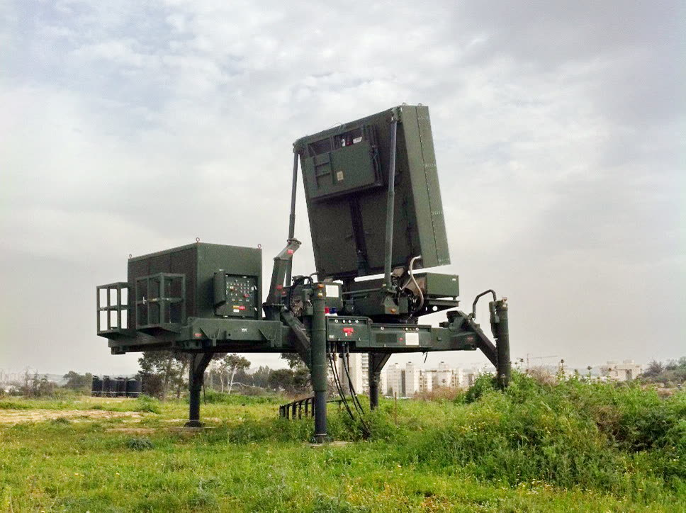
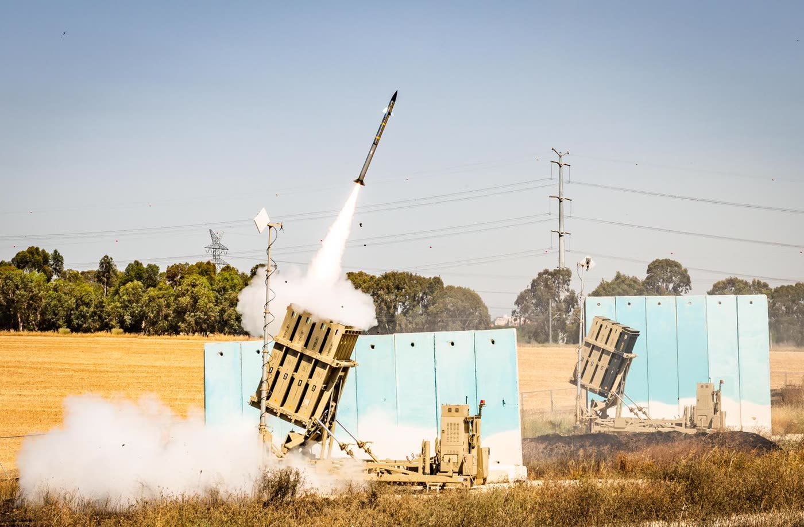
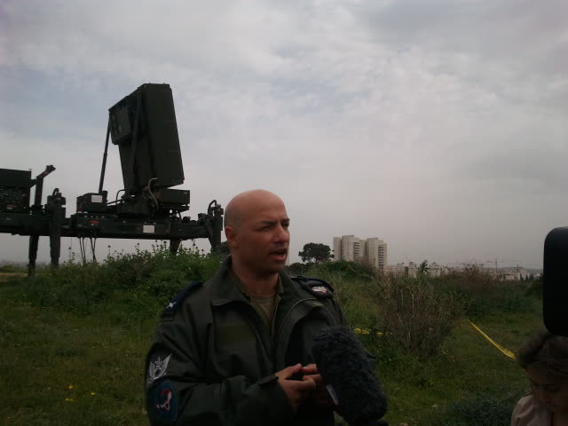
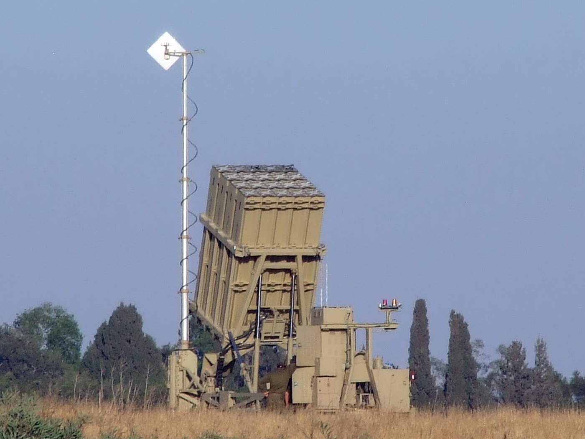
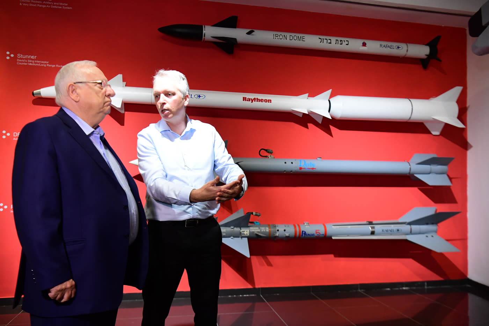
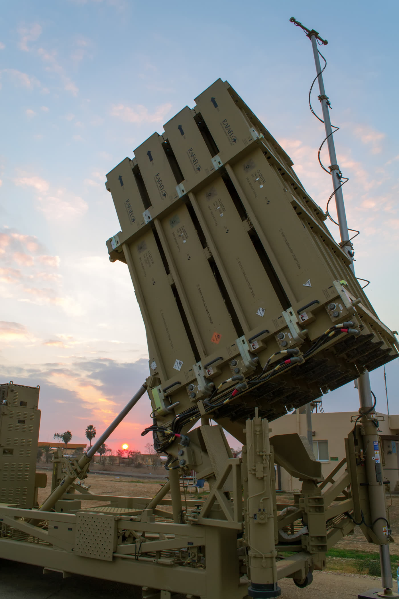
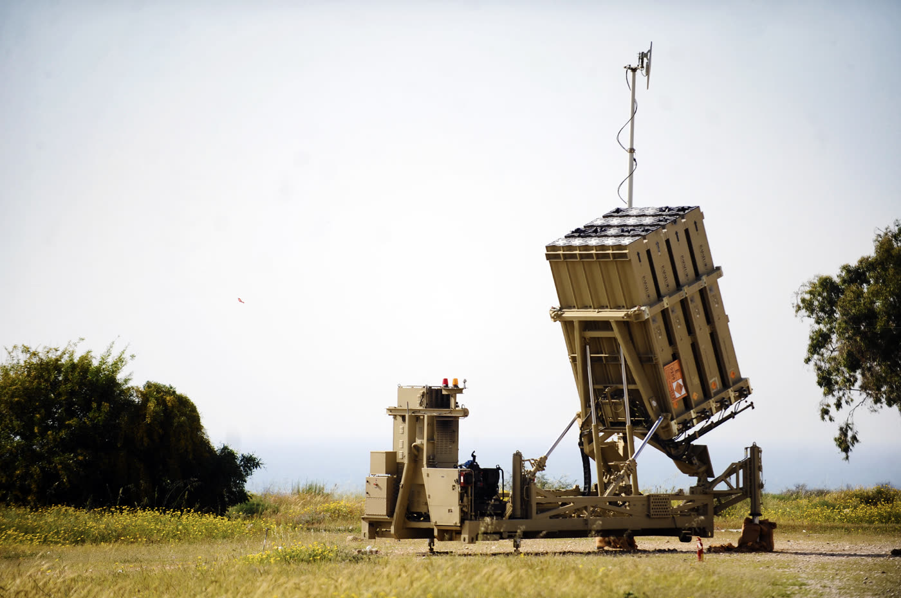
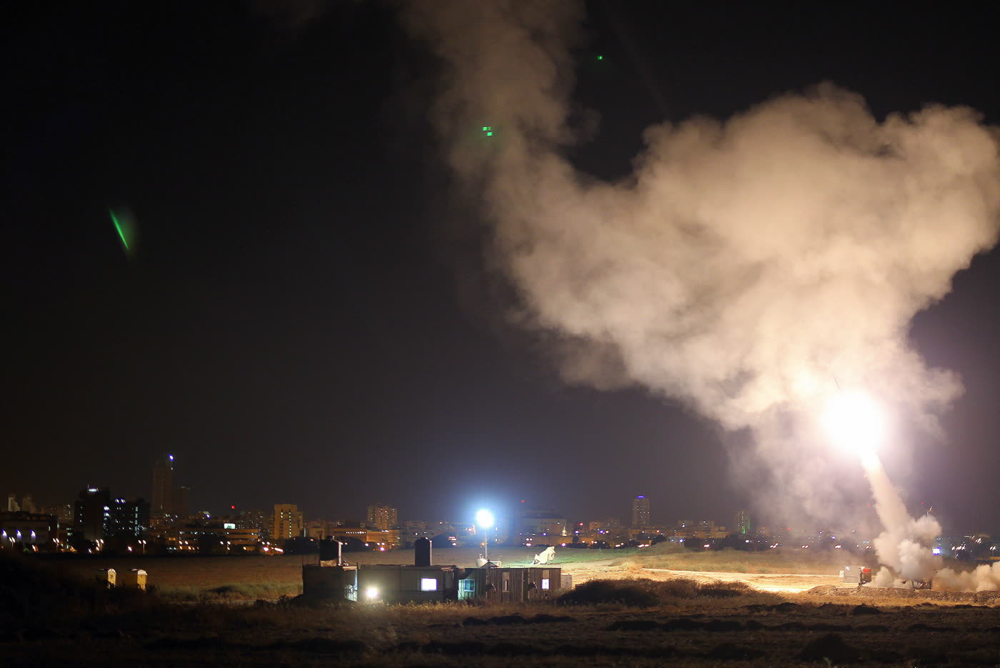
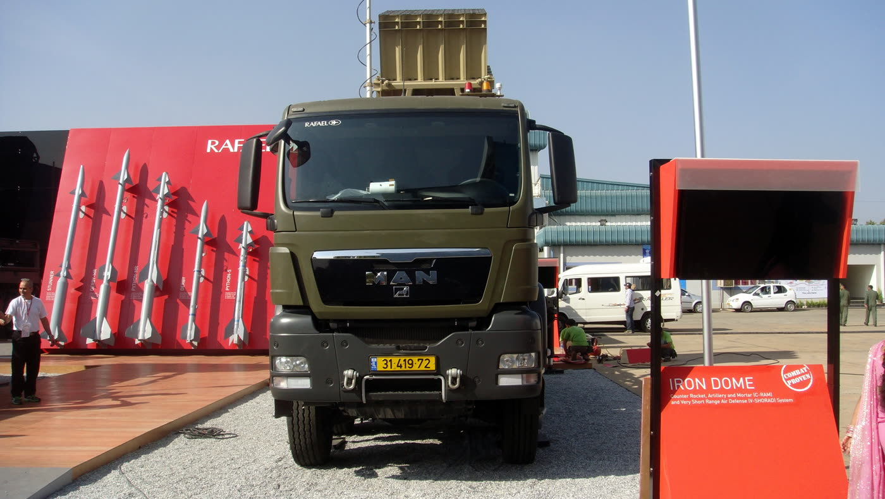
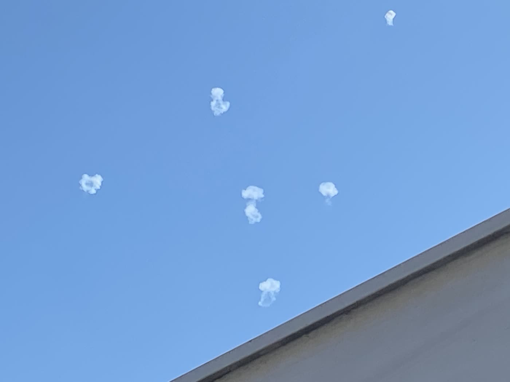
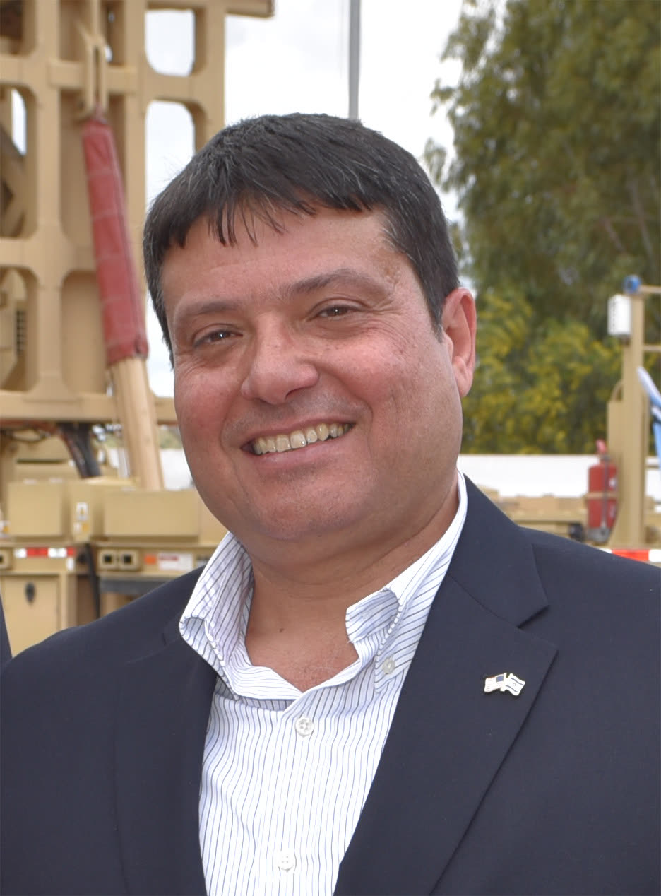
Yosi.tevet, 26.4.2017 · CC BY-SA 4.0### ס-1 · »עשר שנים אחרי הניסוי הראשון« — משרד הביטחון, ינואר 2020 · 2:14 · הועלה 12.1.2020 שני דוברים מודיעים שסדרת ניסויים הסתיימה. בתוך שתי דקות נמסרים שלושת המספרים שהמערכת מספרת על עצמה — עשר שנים מאז הניסוי המערכתי הראשון, יותר מאלפיים יירוטים מבצעיים, ומאה אחוזי הצלחה בסדרה — ומיד אחריהם, כמעט בדרך אגב, גם המכנה: »כל האיומים האלה שבעצם שוגרו לעבר האזורים שהגנו עליהם«. דרגה ג' — מזמינת המערכת ויצרניתה מדברות על הצלחתה ‹מק-14, מק-09›. תומלל אצלנו במלואו; אין לסרטון כתוביות ‹מק-14›. ⚠ התמליל שלנו הוא תמלול מכונה בלי זיהוי דוברים, ואינו יכול לומר מי משני הדוברים אמר מה ‹מק-14›. חלוקת המשפ
תומלל אצלנו במלואו; אין לסרטון כתוביות ‹מק-14›. ⚠ התמליל שלנו הוא תמלול מכונה בלי זיהוי דוברים, ואינו יכול לומר מי משני הדוברים אמר מה ‹מק-14›. חלוקת המשפטים בין פתאל ליונגמן נלקחת מהודעת משרד הביטחון הכתובה מאותו יום, שבה כל ציטוט נושא שם ותפקיד ‹מק-09, מ-106›. הציטוטים המיוחסים בשם בגוף הדף מובאים מן ההודעה הכתובה ולא מן התמליל ‹מק-09›. ### ס-2 · »ביבשה ובים« — משרד הביטחון, מרץ 2025 · 2:33 · הועלה 20.3.2025 בסרטון הזה מדבר אותו אדם שדיבר בס-1 — הפעם אחרי מלחמה. הוא אינו מכריז על מערכת חדשה אלא על סדרת ניסויים שנועדה ללמוד מן הישנה, ואומר שהשדרוגים נעשו »גם תחת אש בזמן מלחמה, ביבשה ובים« ‹
למוד מן הישנה, ואומר שהשדרוגים נעשו »גם תחת אש בזמן מלחמה, ביבשה ובים« ‹מ-107›. אחריו מדבר מנכ"ל רפאל, יואב תורג'מן, ואומר »רפאל גאה לסכם סדרת ניסויים מוצלחת ומתקדמת זו« ‹מ-110›. דרגה ג' ‹מק-15, מ-107›. תומלל אצלנו במלואו ‹מק-15›. ⚠ שמות שני הדוברים ותפקידיהם אינם בתמליל — הם בתיאור הסרטון שפרסם משרד הביטחון, ושם גם שני הציטוטים ככתבם ‹מ-107, מ-110›. ### ס-3 · רפאל מסבירה את עצמה — 2012 · 4:29 · הועלה 20.6.2012 סרטון תדמית של היצרנית, מן השנה שאחרי הכניסה לשירות. בין קטעי מוזיקה נאמרת בו, כמעט בדרך אגב, ההגדרה החדה ביותר שמצאנו לחידוש: המערכת מחשבת לאן כל איום ייפול, »בוחרת ליירט רק את אלה ש
iron-domeנכתב: 22.8.2026 · העושה · שלב ה'
מצב: טיוטה ממופתחת. כל משפט עובדתי נושא בסופו את מזהי הממצאים
שממנו נולד, בסוגריים משולשים ‹…›. משפט שאינו נושא ממצא מסומן ‹חיבור›.
אין משפט יתום.
לא הועלה לשום מקום. ההעלאה לאתר החי טעונה אישור תומר.
כיפת ברזל מבצעית מאז מרץ 2011 ‹מ-035›. התכונה שמבדילה אותה אינה עצם
הפגיעה ברקטה: המערכת מחשבת לאן כל איום עומד ליפול, ומתוכננת לשגר
מיירט רק אל מה שמאיים על השטח שהיא מגנה עליו ‹מ-006, מ-034›. את המערכת בנו
ארבעה גופים — רפאל כקבלן ראשי, אלתא שבתעשייה האווירית, חברת mPrest,
ומפא"ת שבמשרד הביטחון כמזמין ומוביל ‹מ-034› — ומי שנחשב ליוזם שלה אמר
בראיון ב-2015 שמאחורי הפיתוח עמדו מאות אנשים, ובלשונו: »עשיתי את
זה לא לבד« ‹מ-091›. בדרך היו התנגדויות, וסגן הרמטכ"ל השמיע אחת מהן בדיון
באוגוסט 2006 ‹מ-030›. מבקר המדינה הקדיש לפרויקט פרק שלם בדוח 59א ומצא
בו »ליקויים משמעותיים« לצד הכרה ב»נחישותו וחתירתו« של מפא"ת ‹מ-033›.
ועל השאלה עד כמה המערכת באמת עבדה מתנהלת מחלוקת מקצועית אמיתית — בין
טענות הגופים שבנו אותה, פרופסור אמריקאי שקבע שההצלחה נמוכה בהרבה,
ומחקר אקדמי
בלתי תלוי שערך מבחן אמפירי ומצא תשובה שונה לשני מבצעים שונים ‹מ-038,
מ-056, מ-063, מ-066›. שלושת הקולות האלה מובאים כאן זה לצד זה ‹חיבור›.
מכ"ם ה-MMR מגלה את מסלול הרקטה מעל הסוללה ‹מ-034›. מרכז שליטה ובקרה
שפיתחה חברת mPrest מנתח את המסלול ומחשב את אזור הנחיתה המשוער
‹מ-034›. בתום החישוב מקבל המשגר את פקודת ההפעלה ממרכז השליטה והבקרה
‹מ-034›. המסמך האמריקאי מנסח את חלוקת העבודה כניגוד: התוכנה מסוגלת
להכריע את הכיוון בשבריר שנייה, ואילו מפעילים אנושיים מפקחים על המערכת,
טוענים את המשגרים ומאבטחים את היחידה ‹מ-007›. **מה בדיוק עושה המפקח
האנושי בכל יירוט — האם הוא מאשר או רואה — אינו כתוב שם** ‹מ-007›.
בזמן שזה קורה נשמעת האזעקה ‹מ-095›. לפי עדותו של ד"ר דני גולד בראיון בערוץ
הכנסת ב-2015, האזעקה »ממוקדת לאזור הפגיעה של טיל האויב, ובמקביל, כיפת
ברזל יוצאת ליירט אותו« ‹מ-095›. שני הדברים יוצאים מאותו חישוב מסלול:
אותו ניתוח שקובע את אזור הנחיתה המשוער הוא שמפעיל גם את האזעקה
הממוקדת וגם את החלטת היירוט ‹מ-034, מ-095›.
טווח היירוט של המערכת הוא 2.5 עד 43 מייל ‹מ-005› — כארבעה עד
תשעה־וששים קילומטרים, בהמרה שלי ולא בלשון המקור ‹חיבור›. ראש הנפץ של
מיירט ה"תמיר" מפוצץ באוויר את ראש הנפץ של המטרה, ולא רק פוגע בגוף
הרקטה ‹מ-006›. סוללה אחת מורכבת ממשגרים על שלדה ניידת, יחידת מכ"ם
ומרכז שליטה ובקרה, וכל משגר נושא עשרים מיירטים ‹מ-007›. הסוללות
ניידות, וישראל מזיזה אותן כשהאיום משתנה ‹מ-007›.
מה לא נמצא ולכן אינו כתוב כאן: כמה שניות נמשך מעופה של רקטה, ומהו
רצף השלבים המדויק בין הגילוי לשיגור — **בשום מקור שנפתח למעש הזה אין
מי שנוקב בזמן מעוף** ‹חיבור, לפי ק7 ש-1 שביומן›.
זהו החידוש, והוא כתוב במפורש במסמך רשמי אמריקאי ‹חיבור›:
»מערכת הכיוון והמכ"ם של כיפת ברזל מתוכננות לשגר את מיירטי התמיר שלה
רק אל קליעים נכנסים המהווים איום על השטח המוגן (בדרך כלל אתרים
בעלי חשיבות אסטרטגית, ובכללם ריכוזי אוכלוסייה); **היא אינה מכוונת
לירות על רקטות מחוץ לאותו שטח**.«
— שירות המחקר של הקונגרס האמריקאי, RL33222, מעודכן 28.5.2025 ‹מ-006›
היצרנית אומרת את אותו דבר, ומוסיפה את הטעם ‹חיבור›. בסרטון תדמית שפרסמה רפאל
ב-2012 נאמר שהמערכת מעריכה את נקודות הפגיעה של האיומים ו»בוחרת ליירט
רק את אלה שייפלו בשטח המוגן«, וכך »נמנעים שיגורים מיותרים אל מטרות
שאינן מאיימות«, מה שהופך אותה למערכת »חסכונית מאוד« ‹מ-099›. זו אמירה
של החברה שבנתה את המערכת על מוצרה שלה, והיא מובאת כאן ככזאת ‹חיבור›.
התמליל שממנו נלקחה הוא כתובית אוטומטית של יוטיוב ובה שגיאות זיהוי
נראות לעין ‹מ-099, מק-16›.
וכאן נמצא המפתח לכל מחלוקת המספרים שתבוא בהמשך. ‹חיבור›
מכיוון שהמערכת בוררת מה ליירט, כל אחוז הצלחה שנאמר עליה חסר משמעות
עד שנאמר אחוז ממה ‹מ-006›. בנובמבר 2012 דיווח הניו-יורק טיימס
שצה"ל טוען כי כיפת ברזל יירטה »כ-27 אחוז מכלל הרקטות שנורו«, ובאותה
כתבה עצמה נמסר שישראל אומרת שלמערכת שיעור הצלחה »של קרוב ל-90 אחוז
ביירוט הטילים שהיא אמורה לסכל« ‹מ-061›. אלה שני מספרים על שני
מכנים שונים, ושניהם עשויים להיות נכונים בו-זמנית ‹מ-061, מ-006›.
המספרים האלה מובאים כאן מציטוט של כתב עת מקצועי את הניו-יורק טיימס,
כלומר מקור מדרגה שנייה ‹מ-061›.
אותה הפרדה חוזרת בכל מספר שפורסם מאז ‹חיבור›. במחקר אקדמי בלתי תלוי נכתב
שחמש סוללות שירתו בעמוד ענן ב-2012 ונטענו להן 421 יירוטים, שהם
85 אחוז מן הרקטות שהמערכת התעסקה איתן; ותשע סוללות שירתו בצוק
איתן ב-2014 ונטענו להן 735 יירוטים של רקטות ופצמ"רים, שהם 92 אחוז
מאלה שהיא התעסקה איתן ‹מ-062›. שלוש הפרדות נדרשות כאן בבת אחת: 421
ו-735 הם יירוטים נטענים ולא רקטות שנורו; האחוזים הם מן הרקטות
שהמערכת בחרה לטפל בהן; ו-735 כולל פצמ"רים בעוד 421 אינו כולל ‹מ-062›.
מספר הסוללות עצמו שונה בין שני המבצעים, חמש מול תשע ‹מ-062›.
ומה קורה כשהברירה שגויה? שני מקרים מתועדים, ושניהם באותו כיוון:
המערכת ירתה על מה שלא איים על השטח המוגן ‹חיבור›. **בספטמבר 2016,
בפעם הראשונה שיירטה ירי מסוריה, הפילה המערכת שני פגזי מרגמה מעל רמת
הגולן** — וגורמים בצה"ל מסרו לערוץ 2 שהקליעים »ככל הנראה לא היו
פוגעים בשטח ישראל«, ושהמערכת הופעלה בכל זאת ‹מ-108›. לפי אותו דיווח
זו לא הייתה תקלה אלא הפעלה מכוונת ‹מ-108›. **ובמרץ 2018 שיגרה המערכת
מיירטים בתגובה לירי מקלעים בתרגיל של חמאס בעזה** — צה"ל מסר שלא נורו
רקטות לעבר ישראל, ושייבדק »מדוע הופעלו מערכת כיפת ברזל ומערכת
ההתרעה« ‹מ-109›. חוקר אמריקאי מצרף את שני המקרים ומתאר אותם כמעידות
מזדמנות של הטכנולוגיה ‹מ-068›.
את הכיוון ההפוך לא מצאנו: אין בידינו מקור, בשום דרגה, שמתעד שיעור
שגיאה בחיזוי נקודת הנפילה, או מקרה של רקטה שסווגה כלא מאיימת ופגעה
‹מ-006›.
כיפת ברזל היא אחת מארבע שכבות במערך ההגנה האקטיבית של ישראל: כיפת
ברזל לטווח קצר, קלע דוד לטווח הנמוך והבינוני, חץ 2 בגובה העליון של
האטמוספרה וחץ 3 מחוצה לה ‹מ-015›. אתר צה"ל מונה את אותן ארבע מערכות
כמוצבות »בכל הארץ« ‹מ-074›. ומעבר למערכות היירוט, למדינה יש נוהלי
התגוננות אזרחית נרחבים ותשתית התרעה מוקדמת שנועדה להכניס אזרחים
למקלטים ‹מ-015›. גם היוזם עצמו אמר שהאזעקה היא »מרכיב אחד« ‹מ-095›.
יש איומים שכיפת ברזל אינה התשובה להם ‹מ-085›. שירות המחקר של הקונגרס כותב
שבעוד המערכות הישראליות פעלו היטב מול רקטות וטילים של חיזבאללה,
כטב"מים נמוכי טיסה ומהירים וטילי נ"ט הם שגרמו לנפגעים ‹מ-085›.
וכמה עולה מיירט אחד? שירות המחקר של הקונגרס קובע במפורש ש**אין
אומדנים רשמיים לעלות ליחידה של מיירטים ישראליים** ‹מ-082›. המספרים
המסתובבים ברשת אינם נשענים על אומדן רשמי פומבי, ולכן אינם נכתבים כאן
‹מ-082›. גם השאלה מי נושא בעלות של שיגור בודד נשארה בלי מקור ‹חיבור,
לפי ק7 ש-5 שביומן›.
מפת הבונים כתובה בלשון מזמין העבודה ‹חיבור›. משרד הביטחון כותב שמפא"ת מוביל את
פיתוח כיפת ברזל, רפאל היא הקבלן הראשי, אלתא שבתעשייה האווירית
וmPrest שותפות לפיתוח ‹מ-034›. חלוקת התפקידים כתובה שם באותו
מקור: המכ"ם מגלה, מרכז השליטה והבקרה שפיתחה mPrest מנתח מסלול ואזור
נחיתה משוער, והמשגר מקבל את הפקודה ‹מ-034›. **התוכנה — ולא הטיל — היא
מה שמכריע מה ליירט, וזו חברה נפרדת** ‹מ-034›.
אותה מפה חוזרת בשני מקורות נוספים, ושניהם בתוך אותה מערכת ביטחון —
האחד אתר של הצבא, והשני האיש שהוביל את הפיתוח ‹חיבור›. בדיווח אתר
חיל-האוויר מטקס
פרס ביטחון ישראל בספטמבר 2012 נכתב שנכחו »נציגים ממפא"ת, מרפאל,
מאמפרסט ומאלתא« ‹מ-050›. ובראיון בערוץ הכנסת ב-2015 מנה ד"ר דני גולד
את אותם גופים בלשונו: »רפאל הובילה כקבלן ראשי, התעשייה האווירית אלתא
כקבלן משנה מרכזי, וגם אמפרסט כקבלן משנה מרכזי« ‹מ-091›. הפרש הניסוח
בין »שותפה לפיתוח« ל»קבלן משנה« הוא הפרש בין תיאור תפקיד לתיאור מעמד
חוזי, ואינו סתירה ‹מ-034, מ-091›.
מעל כל אלה עומד מספר שאין לו תצלום: לפי גולד, מאחורי הפיתוח עמדו
מאות אנשים ‹מ-091›. פרס ביטחון ישראל לשנת 2012 הוענק ל**שמונה
מבכירי המהנדסים שפיתחו את המערכת, ולא לאדם אחד ‹מ-043›. שמות
שמונת המהנדסים אינם בהודעה, וחיפשנו ולא מצאנו אותם** ‹מ-043›. ולא
מצאנו אף תצלום חופשי של האנשים האלה בזמן שבנו — מה שיש הוא דיוקנים
מאוחרים בהרבה ‹מק-17›.
התשתית הארגונית קדמה למערכת: ארגון ההגנה מטילים של ישראל, IMDO, הוקם
ב-1991 בעקבות מלחמת המפרץ הראשונה, שנים לפני שהתחילה העבודה על כיפת
ברזל ‹מ-041, מ-017›.
באוגוסט 2006, בדיון אצל שר הביטחון עמיר פרץ, אמר ראש מפא"ת שמואל קרן
שאנשיו »עוסקים בהיבט הטכנולוגי ולא בהיבט המערכתי כולו, כי עוד אין
פרויקט כפרויקט מאושר«, וכי הטכנולוגיות מקודמות לאור »צורך מבצעי
שאנחנו [מפא"ת] הגדרנו לעצמנו« ‹מ-030›. באותו דיון השמיע סגן הרמטכ"ל,
אלוף משה קפלינסקי, את ההתנגדות: »קל מאוד לקבל החלטות היום שהן
רלוונטיות וכולנו אחרי טראומה של חודש במקלטים«, החלטות ש»עלולות לקחת
אותנו למקומות שאנחנו לא רוצים« ‹מ-030›. ובאותו דיון עצמו סיכם שר
הביטחון שכיפת ברזל היא »הפרויקט החשוב ביותר כרגע« ושיש לזרזה »על אף
העלויות הכרוכות בדבר« ‹מ-031›. שני הצדדים נשמעו באותו דיון ‹חיבור›.
והייתה חלופה ממשית ‹חיבור›. ב-19.11.2006 מינה ראש מפא"ת ועדה בראשות סגנו
המדעי, יעקב נגל, לבחינת מערכות ליירוט רקטות קצרות טווח; הוועדה כללה
מומחים חיצוניים בתחומי הטילאות והלייזרים ופעלה עד ינואר 2007 ‹מ-024›.
היא בחנה שלוש חלופות: כיפת ברזל, שרביט קסמים ו"סקייגארד" ‹מ-024›.
"סקייגארד" הייתה הצעה של חברת נורת'רופ-גרומן האמריקנית לפיתוח מערכת
לייזר כימי רב-עוצמה, המבוססת על הגרסה הניידת של פרויקט "נאוטילוס"
שפיתוחו הופסק באוגוסט 2005; ביוני 2006 נפגש ראש מפא"ת עם נציגי החברה
‹מ-025›. ההכרעה נומקה בכך שליירוט הקינטי »יתרון מובהק בהיבטי העלות
והמבצעיות« על פני חלופת הלייזר ‹מ-025›. המבקר מסייג את זה בעצמו:
הביקורת לא עסקה בהיבטים ההנדסיים ובחוות דעת הנדסיות לגבי החלופות, כלומר
אין בדוח אישור מקצועי לכך שההכרעה הטכנית הייתה נכונה — רק תיעוד שהיא
התקבלה בהליך ‹מ-025›.
היוזם עצמו תיאר את הדברים כך בראיון ב-2015: »היו בהתחלה הרבה מאוד
התנגדויות. הייתה גם תמיכה… חלק חשבו שזה לא יעבוד לעולם בגלל האתגר
הטכנולוגי« ‹מ-093›. זו עדותו על מפעלו שלו, ומה שנכתב כאן על ההתנגדויות
נשען על פרוטוקול הדיון שבדוח המבקר ולא עליה ‹מ-030, מ-093›. שניים
מהוגי הרעיון ברפאל אמרו לאתר חיל-האוויר ב-2012 »בהתחלה זרקו אותנו מכל
המדרגות עם הרעיון הזה« — ציטוט שלהם על עצמם, לא ממצא ‹מ-052›. הצירוף
»שניים מהוגי הרעיון« הוא עצמו עדות נוספת לכך שגם בתוך רפאל היו כמה
הוגי רעיון, ושמותיהם לא נמסרו ‹מ-052›.
הרעיון לא נולד ממלחמת לבנון השנייה ‹מ-017, מ-019, מ-030›. **צוות רב-זרועי פעל מאוקטובר 2004
עד אפריל 2005**, בחן הצעות וקידם אבני בניין טכנולוגיות — ראש קרבי
ליירוט וראש ביות זול, כדי לאפשר ייצור טיל מיירט »במספר עשרות אלפי
דולרים« ‹מ-017›. המספר הזה הוא יעד תכנוני משנת 2005, ולא מחיר;
מחיר בפועל לא פורסם מעולם ‹מ-017, מ-082›. באוגוסט 2005 המליץ הצוות
בדוח על פתרון משותף לרפאל (פיתוח הטיל), לתע"א (ראש ביות ומערכת נשק)
ולאלתא (מכ"ם) ‹מ-017›. **הפתרון כונה תחילה "אל קסם", ולימים "כיפת
ברזל"** ‹מ-017›.
באוגוסט 2005 נתן ראש היחידה למחקר ופיתוח שבמפא"ת, תא"ל ד"ר דני גולד,
"הנחיות פרויקטאליות" לתכנית: מחקר מערכת והדגמה בתוך 18 חודשים, פיתוח
בהיקף מלא בתוך שלוש שנים, והצטיידות ‹מ-019›. הוא הנחה גם על »קידום
טלסקופי של הפרויקט, בחפיפה בין השלבים, להגעה ליכולת מבצעית מוקדמת«,
ועל התנעת פעילות לגיוס מימון בחו"ל ‹מ-019›. בספטמבר 2006 אמר בדיון:
»אנו לא מעונינים להתגלגל בבדיקת היתכנות, אלא להתניע פרויקט« ‹מ-021›.
ואז מגיע הסדר ההפוך. ‹חיבור› ב-12.11.2006 הנחה מפא"ת את רפאל
להתחיל בפיתוח בהיקף מלא כשבידי רפאל לא הייתה הזמנה לכך; הזמנת
משרד הביטחון יצאה רק כחמישה חודשים מאוחר יותר, באפריל 2007 ‹מ-022›.
בפברואר 2007 החליטו ראש הממשלה אהוד אולמרט ושר הביטחון עמיר פרץ
שכיפת ברזל היא המענה לירי רקטות קצרות טווח ‹מ-023›. בספטמבר 2007
החליט הרמטכ"ל רא"ל גבי אשכנזי להצטייד במערכת ‹מ-032›. כלומר העבודה
בפועל התחילה לפני ההזמנה, וההזמנה לפני ההחלטה המדינית והצבאית
‹מ-022, מ-023, מ-032›.
מכאן גם סתירת התאריכים. משרד הביטחון כותב שפיתוח כיפת ברזל
»הושק ב-2007« ‹מ-035›, ואתר חיל-האוויר כותב »הפיתוח הרשמי, עליו
הופקדה רפאל, החל בשנת 2007« ‹מ-046›. דוח מבקר המדינה מתעד החלטה
מאוגוסט 2005 ותחילת עבודה ב-12.11.2006 ‹מ-016, מ-022›. **שני המקורות
רשמיים, ושניהם סופרים דברים שונים:** "2007" הוא ההזמנה הרשמית והאישור,
ו"2005–2006" הוא מתי העבודה בפועל התחילה ‹מ-036›. ההפרש הזה בין
"מתי התחילו לעבוד" ל"מתי אישרו" הוא בדיוק מה שדוח המבקר בא לבדוק
‹מ-036, מ-033›.
וזה מה שהמבקר מצא ‹חיבור›. לפי דוח מבקר המדינה 59א, ראש היחידה למו"פ
שבמפא"ת, תא"ל ד"ר דני גולד, »פעל שלא בהתאם להוראות משהב"ט כשהחליט
באוגוסט 2005 על פיתוח 'כיפת ברזל'… כל זאת בטרם אישרו גורמים מוסמכים
אלה את הפרויקט« ‹מ-016›. שני חלקי המשפט הולכים יחד: אותו מסמך שמייחס
לו את ההחלטה הוא זה שקובע שהיא ניתנה שלא לפי ההוראות ‹מ-016›.
המבקר קבע גם שמשרד הביטחון הביא לאישור הממשלה את תכנית כיפת ברזל
»בדיעבד« ‹מ-026›, ושהפעילות שלא בהתאם להוראות הביאה »להערכת חסר
ולאומדן חלקי בסך מאות רבות של מיליוני ש"ח«, ושבתוך כשמונה חודשים
בלבד חל גידול של כ-40% באומדן ‹מ-027›. היחידה חשובה: זהו גידול
באומדן, לא בהוצאה בפועל ‹מ-027›. בסוף 2007 נאמדה העלות הכוללת של
הפיתוח וההצטיידות ב»מספר מיליארדי ש"ח לכל מערכת« ‹מ-028›. **המבקר
עצמו אינו נוקב מספר מדויק, ולכן גם כאן לא נכתב אחד** ‹מ-028›.
ואת שני הצדדים כתב המבקר באותה פסקה:
»משרד מבקר המדינה ער לנחישותו וחתירתו של מפא"ת לפתח בהקדם מערכות
להגנה אקטיבית. אולם, בביקורת שנערכה על תהליך קבלת ההחלטות וסדרי
עבודת המטה … נמצאו ליקויים משמעותיים במפא"ת ובצה"ל.«
— מבקר המדינה, דוח שנתי 59א, 2008 ‹מ-033›
מלחמת לבנון השנייה, בקיץ 2006, נכנסת לסיפור באמצע ולא בהתחלה: הצוות
פעל כבר מאוקטובר 2004, וההנחיה של גולד ניתנה באוגוסט 2005 ‹מ-017,
מ-019›. מה שהמלחמה עשתה, לפי הדוח, הוא לעדכן צורך מבצעי שמפא"ת הגדיר
לעצמו — ולהוסיף לחדר את הטראומה שקפלינסקי הזהיר מפניה ‹מ-030›.
בספטמבר 2009 הוקם הגדוד הראשון של כיפת ברזל, ולפקד עליו נבחר סא"ל
שבתאי בן-בוחר, שאמר אז לאתר חיל-האוויר »אנחנו מתחילים מאפס, בונים הכל
מהתחלה« ‹מ-053›. במרץ 2011 הוכרזה המערכת מבצעית ‹מ-035›.
היירוט המבצעי הראשון היה של רקטת גראד ששוגרה מרצועת עזה לעבר
אשקלון ‹מ-035, מ-046›. **על התאריך שלו יש שני נוסחים רשמיים
ישראליים:** משרד הביטחון כותב 7.4.2011 ‹מ-035›, ואתר צה"ל בסיכום 2021
כותב שההודעה על היירוט הראשון הגיעה לעובדת רפאל ב-11.4.2011 ‹מ-070›.
לא מצאנו מקור שמיישב בין השניים, ולא נכתוב גישור שאין לו מקור ‹מ-070›.
זו השאלה שכולם שואלים, ויש עליה שלושה קולות ‹חיבור›.
משרד הביטחון כותב על המערכת שלו שמאז נכנסה לשירות היא »מנעה בהצלחה
אינספור רקטות מלפגוע ביישובים ישראליים«, ושבעמוד ענן ב-2012 ובצוק
איתן ב-2014 »שיעור ההצלחה של כיפת ברזל הגיע ל-90%« ‹מ-038›. **רפאל
מוסרת על עצמה** שמערכותיה ביצעו »יותר מ-5,000 יירוטים מוצלחים« בשיעור
הצלחה »של מעל 90%« ‹מ-010›. בינואר 2020 מסר ראש מינהלת "חומה" במפא"ת, משה פתאל, שבעשור
שחלף מאז ניסוי היירוט הראשון בוצעו »עשרות יירוטים במסגרת ניסויים,
ויותר מאלפיים יירוטים מבצעיים« ‹מ-106›. את »מאה אחוזי ההצלחה« בסדרת
הניסויים שהסתיימה אז אמר לא הוא אלא היצרנית — סמנכ"ל בכיר וראש
חטיבת הגנה אווירית ברפאל, פיני יונגמן ‹מ-079, מ-106›.
כל שלוש האמירות האלה הן של הגוף המדבר על מוצרו שלו, ולכן הן מובאות
כאן בייחוס גלוי ולא כעובדה ‹חיבור›. גם שירות המחקר של הקונגרס עצמו
נוקט לשון »רפאל טוענת« ואינו קובע ‹מ-010›. במקור אין הגדרה מהו "יירוט
מוצלח", אין תאריך שאליו נכון המספר 5,000, ואין הפניה למדידה ‹מ-010,
מ-038›. ו"אינספור" אינו מספר ‹מ-038›.
והמשפט שבא מיד אחרי "מאה אחוזי הצלחה", באותה הודעה ומפי אותו דובר,
הוא שמגדיר את המכנה: »המערכת יירטה את כל האיומים **ששוגרו לעבר
האזורים שהגנו עליהם** במסגרת הניסוי« ‹מ-079›. כלומר גם בלשון היצרנית
עצמה, המכנה הוא מה שאוים על השטח המוגן ‹מ-079, מ-006›. ו"מאה אחוזי
הצלחה" נאמר על סדרת ניסויים מתוכננת, לא על לחימה ‹מ-079›.
ובסרטון של רפאל מ-2012 יש סתירה פנימית שראוי לומר אותה: באותו סרטון
שבו נאמר שהמערכת בוררת רק את המאיים, נאמר במקום אחר שהיא »מיירטת את
כל האיומים לטווח הקצר והבינוני ומשמידה אותם בבטחה מחוץ לשטח
המוגן« ‹מ-101, מ-099›. שתי האמירות אינן יכולות לעמוד יחד — מערכת
שיורה רק על המאיים אינה מיירטת את הכול ‹מ-099, מ-101›. ו"בבטחה" עומד
במתח עם התיעוד: שירות המחקר של הקונגרס מתעד שבאפריל 2024 נפצעה ילדה
בדואית ישראלית בת שבע מרסיסים נופלים, ובאוקטובר 2024 נהרג פלסטיני
בגדה המערבית מרסיסים נופלים ‹מ-014›. **המסמך אינו מייחס את שני
המקרים האלה למערכת מסוימת** אלא מתאר אותם בהקשר המערך הרב-שכבתי כולו,
וכך הם נכתבים גם כאן ‹מ-014, מ-015›.
ביולי 2014 פרסם פרופ' תיאודור פוסטול מ-MIT מאמר בכתב העת של איגוד
מדעני האטום שבו קבע שבחינה מפורטת של תצלומי שובלי מיירטים ממבצע
נובמבר 2012 מלמדת ששיעור ההצלחה היה »נמוך מאוד — **נמוך עד כדי
5 אחוזים, ואולי אף פחות**« ‹מ-056›.
הטענה שלו אינה "לא האמנתי להם" אלא טענה גיאומטרית שאפשר לבדוק.
לדבריו, כדי להשמיד את ראש הנפץ של רקטת ארטילריה חייב המיירט להתקרב
אליה כמעט חזיתית; פגיעה מן הצד או מאחור אינה משמידה את ראש הנפץ
‹מ-057›. ומתצלומי השובלים, לדבריו, עולה ש»רוב המיירטים של המערכת רדפו
אחרי הרקטות מאחור או פגשו אותן מן הצד« ‹מ-057›. זו שיטת מדידה שאפשר
להסכים או לחלוק עליה, ולכן זו מחלוקת מקצועית ‹מ-057›.
**ופוסטול העלה גם את ההסבר החלופי, שהוא האתגר האמיתי לכל טענת הצלת
חיים:** לדבריו, מיעוט הנפגעים בישראל מירי רקטות ארטילריה ניתן לייחוס
למאמצי ההתגוננות האזרחית ולא לביצועי המערכת; לישראל יש מערך
מקלטים נרחב, וראשי הנפץ של רוב הרקטות שוקלים כעשרה עד עשרים ליברות,
משקל שהופך התרעה מוקדמת והסתתרות ליעילות עוד יותר ‹מ-058›. הטענה הזאת
מתיישבת עם מה שכתוב במסמך האמריקאי הרשמי: כיפת ברזל היא אחת מארבע
שכבות, ולצידן נוהלי התגוננות והתרעה ‹מ-015›.
ואז הציע פוסטול מבחן. הוא כתב שממשלת ישראל מפרסמת נתוני תביעות
ביטוח, שנתונים אלה היו מראים בבירור ירידה בנזק לקרקע באזורים המוגנים,
ו»הישראלים לא סיפקו שום ראיה לירידה בנזק לקרקע« ‹מ-059›.
את המבחן הזה ערך אחר כך חוקר שלישי. פרופ' מייקל ג'יי ארמסטרונג
מאוניברסיטת ברוק שבקנדה פרסם ב-2018 מאמר בכתב העת השפיט *Journal of
Global Security Studies*, ולצידו מאמר הסבר משלו ‹מק-07›. שקיפות:
גוף המאמר האקדמי חסום מאחורי חומת תשלום, ומה שנכתב כאן מבוסס על
התקציר ועל מאמר ההסבר של המחבר עצמו ‹מק-07›.
הוא בדק בדיוק את מה שפוסטול ביקש ‹מ-059, מ-063›. בישראל לא היו מיירטים במלחמת לבנון
השנייה ב-2006, ובאותה מלחמה נרשמו **6.7 תביעות ביטוח לנזקי רכוש לכל
רקטה; השיעור ירד ל-2.9 ב-2012 ול-1.2 ב-2014** ‹מ-063›.
אבל ההשוואה הזאת מפספסת פרט: במבצע עופרת יצוקה ב-2008–2009, לפני
כיפת ברזל, נרשמו 2.4 תביעות בלבד לכל רקטה — וכשמכניסים אותו
לחשבון, כניסת המערכת לשירות ב-2011 מתלווה ל»שיעורי נזק מעט גבוהים
יותר« ‹מ-063›. וכשמשקללים את שיעורי הנזק ביחס למשקל ראש הנפץ, נעשים
ארבעת המספרים 4.4, 3.9, 4.3 ו-1.5 — לפי הסדר: מלחמת לבנון השנייה
2006, עופרת יצוקה 2008–2009, עמוד ענן 2012, צוק איתן 2014 ‹מ-063›.
קרבת שלושת הראשונים מלמדת שלמערכת הייתה השפעה מזערית ב-2012,
והצניחה שאחריהם מלמדת שהיא הייתה משפיעה מאוד ב-2014 ‹מ-063›.
ומכאן החיים. לפי אותו מחקר, בצוק איתן יירטה המערכת **59 עד 75
אחוז מכלל הרקטות המאיימות, והיירוטים מנעו נזק רכוש של 42 עד 86
מיליון דולר, וכן שלושה עד שישה הרוגים ו-120 עד 250 פצועים** ‹מ-064›.
בעמוד ענן ב-2012, לעומת זאת, חסמו היירוטים פחות מ-32 אחוז מן
הרקטות המאיימות, ומנעו **לכל היותר שני הרוגים, 110 פצועים ושבעה
מיליון דולר** נזק ‹מ-064›. אלה טווחים, והם נכתבים כטווחים ‹מ-064›.
ו-59 עד 75 אחוז אינם סותרים את 92 האחוזים שנטענו. ארמסטרונג מסביר
במפורש שהאחוזים שלו כוללים רקטות בכל מקום בישראל, ולכן טענה על
92 אחוז רק לאזורים המוגנים נראית לו סבירה ‹מ-064›. שוב, אותו חוק
מכנים ‹מ-064, מ-006›.
והמסקנה הכוללת שלו:
»תוצאות אלה מלמדות שהוויכוח על כיפת ברזל היה מקוטב מדי. ערכה
ההתחלתי של המערכת אולי היה **סמלי במידה רבה. אבל מאוחר יותר היא
נעשתה משפיעה מאוד**.«
— מייקל ג'יי ארמסטרונג, 2018 ‹מ-066›
⚠ המשפט הזה נכתב ב-2018 ומכסה עד 2014. הוא אינו אומר דבר על
שומר החומות ב-2021, על 7 באוקטובר 2023 או על 2024, ולא מצאנו הערכה
חיצונית בלתי תלויה לשנים האלה ‹מ-066›.
הפרס. ב-25.6.2012 הודיעו שר הביטחון אהוד ברק ומנכ"ל המשרד אודי
שני שצוות המפתחים של כיפת ברזל נבחר לזוכה בפרס ביטחון ישראל, ושהפרס
יוענק לשמונה מבכירי המהנדסים שפיתחו את המערכת — מהנדסי מפא"ת,
רפאל ואמפרסט — וגם למערך ההגנה האווירית שלוחמיו מפעילים אותה ‹מ-043›.
הטקס נערך ב-3.9.2012 בבית הנשיא, בנוכחות נשיא המדינה שמעון פרס, שר
הביטחון ומפקד חיל-האוויר אלוף אמיר אשל ‹מ-049›. **באותו טקס הוענק
הפרס גם לשני פרויקטים ביטחוניים מסווגים** — כיפת ברזל לא הייתה הזוכה
היחידה באותה שנה ‹מ-049›. גולד הוצג שם כ»תא"ל (מיל') … לשעבר מפקד
יחידת המחקר והפיתוח במפא"ת, שיזם את פיתוח המערכת« ‹מ-051›.
המערכת לא נעצרה ב-2011. בינואר 2020 אמר משה פתאל שהמערכת שנבדקה בסדרת הניסויים היא »משודרגת
ומשופרת בהשוואה למערכת המבצעית היום«, ושכאשר תימסר תאפשר להתמודד טוב
יותר עם האיומים הצפויים ‹מ-080›. במרץ 2025 מסר אותו אדם שמערכת
הביטחון ממשיכה לשדרג את היכולות »גם תחת אש בזמן מלחמה, **ביבשה
ובים**« ‹מ-107›. המשפט מדבר על שדרוג שנעשה בשתי הזירות, ואינו מכריז
על גרסה ימית ‹מ-107›. גרסה ימית קיימת, ושמה C-Dome — שירות המחקר
של הקונגרס מזכיר אותה פעם אחת, בתוך סוגריים, ואינו מוסיף עליה דבר
‹מ-007›.
כלומר "כיפת ברזל" אינה מערכת קפואה — יש דורות, וכל נתון ביצועים שייך
לדור מסוים ולשנה מסוימת ‹מ-080›.
הכסף האמריקאי, ומה שהוא מכסה. נכון ל-28.5.2025, ארצות הברית
העניקה לישראל »יותר מ-6 מיליארד דולר« עבור **סוללות כיפת ברזל,
מיירטים, עלויות ייצור משותף ותחזוקה** ‹מ-001›. יחידת הספירה כתובה
בציטוט עצמו וחשובה: זהו אינו תקציב הפיתוח ‹מ-001›. בטבלת ההקצאות
האמריקאית, השנה הראשונה שבה מופיע כסף לכיפת ברזל היא FY2011, בסך
205 מיליון דולר; בשנים FY2006–FY2010 העמודה ריקה ‹מ-002›. הסך המצטבר
בטבלה הוא 6,075.281 מיליון דולר ‹מ-002›.
וכאן עומדת סתירה בין שני מקורות רשמיים. משרד הביטחון כותב
ש»ארצות הברית הייתה שותפה בפיתוח מערכת כיפת ברזל וממשיכה לפתח אותה
עם ישראל כיום« ‹מ-037›. שירות המחקר של הקונגרס כותב ש»מכיוון שכיפת
ברזל פותחה בידי ישראל לבדה, ישראל שמרה בתחילה על זכויות קנייניות
בטכנולוגיה« ‹מ-037›. איננו מכריעים ביניהם, ומציגים את שניהם ‹מ-037›.
הנתון הקשה שלצידם הוא הטבלה: אין בה דולר אחד לכיפת ברזל לפני FY2011,
שנים אחרי שהפיתוח נעשה ‹מ-002›. ולצידו נתון נגדי מן הכיוון השני: כבר
בהנחיה של אוגוסט 2005 נכללה הוראה על »התנעת פעילות לגיוס מימון בחו"ל«
‹מ-019›.
ואז קנה צבא זר. צבא ארצות הברית רכש מרפאל **שתי סוללות כיפת ברזל
בעלות של 373 מיליון דולר**; המקור כותב »לפני מספר שנים« ואינו נוקב
בשנה, ולכן גם כאן לא נכתבת שנה ‹מ-011›. חיל הנחתים האמריקאי שילב
רכיבים של כיפת ברזל ביכולת יירוט חדשה משלו ‹מ-011›. **ולפי דיווח
שהמסמך תולה בו את המספר ואינו נוקב בשמו**, רכש חיל הנחתים 80 מיירטי
תמיר ב-FY2024 ותכנן לרכוש 240 נוספים מקו ייצור חדש באיסט קמדן,
ארקנסו, של RTX ורפאל ‹מ-011›. הסייג הזה הוא של המקור, לא שלנו
‹מ-011›. וב-2023 הוחכרו שתי הסוללות האלה
חזרה לישראל ‹מ-011›; ב-24.10.2023 הודיע הממשל האמריקאי על העברתן,
ולפי גורם ביטחוני אמריקאי ההסדר נעשה כ»החכרה בעלות« משום שזו הייתה
הדרך המהירה ביותר ‹מ-012›. הפנטגון לא פירט בפומבי את התנאים ואת
הסמכויות המשפטיות שביסוד ההעברה ‹מ-012›.
7 באוקטובר 2023 — והמספרים שלא פורסמו. לפי הערכת צה"ל, בשעות
הראשונות של המתקפה שוגרו מרצועת עזה 2,500 עד 3,000 רקטות ‹מ-013›.
לפי אותו מסמך, כ-18 אזרחים נהרגו מירי רקטות מעזה ב-7 באוקטובר
ובימים שאחריו, והייתה פגיעה נרחבת בתשתיות בדרום ישראל ‹מ-013›.
סוללות כיפת ברזל יירטו רקטות רבות, אך כמות הקליעים ייתכן שהציפה
זמנית את ההגנה הישראלית ‹מ-013›. וימים אחדים אחר כך סירבו גורמי
צה"ל למסור נתוני ביצועי יירוט ‹מ-013›. **הסירוב הזה הוא עצמו ממצא:
הוא מגביל את מה שאפשר לדעת על ביצועי המערכת ביום שבו שוגרו אליה
אלפי רקטות בתוך שעות** ‹מ-013›. המסמך אינו מדרג את היום הזה מול
אירועים אחרים ‹מ-111›. מה שהוא כותב על התקופה שאחריו הוא שמעולם לא
עמדה ישראל מול ירי »מכל כך הרבה חזיתות ומכל כך הרבה סוגי איום«
‹מ-112›.
2023–2024 בצפון. לפי אומדן שמצטט שירות המחקר של הקונגרס ומקורו
במרכז מחקר ישראלי, במהלך מבצע חצי הצפון בסתיו 2024 שוגרו לישראל
כ-16,000 אמצעי לחימה — רקטות, כטב"מים וטילי נ"ט — מהם **כאלף
פגעו, והרגו 77 ישראלים (47 אזרחים ו-30 חיילים)** ופצעו אלפים
‹מ-085›. שלוש הפרדות חובה כאן: 16,000 אינם רקטות בלבד; אלף הפגיעות
אינן "מה שכיפת ברזל פספסה", משום שחלק גדול מן הירי נופל בשטח פתוח
והמערכת אינה יורה עליו כלל ‹מ-006›; ופינוי תושבי הצפון הוא משתנה
מתערב שהמסמך עצמו מציין אותו ‹מ-085›.
והכרה מבחוץ. ב-11.2.2025 נבחר ד"ר דני גולד לחבר בינלאומי באקדמיה
הלאומית להנדסה של ארצות הברית, »על תרומה ומנהיגות בתעשייה הביטחונית,
ובמיוחד פיתוח והצבה של מערכות הגנה מפני טילים« ‹מ-087›. **נימוק
הבחירה מנוסח בלשון כללית ואינו מזכיר את כיפת ברזל בשמה** ‹מ-087›.
וזו אינה פרס אלא בחירה לחברוּת ‹מ-087›.
באפריל 2015 התארח ד"ר דני גולד בתוכנית של ערוץ הכנסת ‹מק-12›. המראיינת
פתחה: »שלום לדוקטור דני גולד, אבי מערכת כיפת ברזל« ‹מ-091›.
הוא לא קיבל את הניסוח ‹חיבור›. »אני גם מתרגש בשם כל מאות האנשים שעמדו
מאחורי פיתוח המערכת הזאת«, אמר ‹מ-091›. ובהמשך: »ושוב, **עשיתי את זה
לא לבד**, אלא עם אנשים במפא"ת, צה"ל חיל האוויר והתעשיות הביטחוניות.
רפאל הובילה כקבלן ראשי, התעשייה האווירית אלתא כקבלן משנה מרכזי, וגם
אמפרסט כקבלן משנה מרכזי« ‹מ-091›.
הרשימה שהוא מנה מאוששת פעמיים ממקורות רשמיים: מפת הקבלנים של משרד
הביטחון ‹מ-034›, ורשימת הנוכחים בטקס הפרס ‹מ-050›. **שמות מאות האנשים
אינם ברשומה, ולא מצאנו אותם** ‹מ-043›.
| # | כיתוב | מקור ורישיון |
|---|---|---|
| ת-1 | המכ"ם. השדה נגמר, ומעברו מתחילים הבתים. | דובר צה"ל דרך ויקישיתוף, 15.6.2012 · CC BY-SA 2.0 |
| ת-2 | שיגור משדה קצור, מאי 2021. מאחורי חומות הבטון התכולות עומד משגר שני — סוללה אינה משגר אחד. | דובר צה"ל, 13.5.2021 · CC BY-SA 3.0 |
| ת-3 | קצין מדבר לתקשורת ליד המכ"ם, מרץ 2012. באופק שמימין — גוש בנייני מגורים לבנים. | דובר צה"ל דרך Flickr, 12.3.2012 · CC BY-SA 2.0 |
| ת-4 | משגר אחד בשדה, בין ברושים. אין כאן כיפה — יש מכשיר שעומד במקום מסוים ומגן על מה שסביבו. | NatanFlayer, 2.6.2011 · CC BY-SA 3.0 |
| ת-5 | מיירט על קיר תצוגה. מה שמודפס עליו בשתי שפות הוא שם המערכת, "IRON DOME · כיפת ברזל", ולא שם המיירט. הטיל שמתחתיו אינו של כיפת ברזל כלל — השלט שעל הקיר קורא לו "סטאנר", מיירט של קלע דוד. | עמוס בן גרשום, לשכת דובר נשיא המדינה, 13.3.2018 · CC BY-SA 3.0 |
| ת-6 | שם היצרן מודפס על כל מכל בנפרד, ולידו חץ שמורה לאנשים שיעמיסו אותו איזה צד למעלה. | Alexey Goral, 27.12.2012 · CC BY-SA 3.0 |
| ת-7 | הסוללה בסביבות אשקלון, אפריל 2011 — בימים שבהם ביצעה המערכת את יירוטיה המבצעיים הראשונים ‹מ-035, מ-070›. בשדה פרחו פרחי בר. | דובר צה"ל דרך Flickr, 10.4.2011 · CC BY 2.0 |
| ת-8 | שיגור בלילה, יולי 2014. בשוליים השמאליים של אותה תמונה — אורות העיר. | דובר צה"ל, 8.7.2014 · CC BY 2.0 |
| ת-9 | תערוכת תעופה בהודו, פברואר 2013. על השלט שלצד המשגר הטביעה היצרנית חותמת: "הוכח בקרב". מבצע עמוד ענן נערך בנובמבר 2012 ‹מ-056, מ-063› — והמחלוקת על מה בדיוק הוכח שם נמשכת עד היום. | Pritishp333, Aero India, 4.2.2013 · CC BY-SA 3.0 |
| ת-10 | מן החצר, זה מה שרואים: כתמי עשן קטנים בשמיים. הצלם כינה אותם יירוטים. | שלמה רודד, פיקיוויקי, 5.10.2024 · CC BY 2.5 |
| ת-11 | אוקטובר 2020. המשגר שמאחורי הצועדים צבוע ירוק־זית ולא בצבע החול הישראלי, ועל דופנו — דגל ארצות הברית וסמל צבא ארה"ב. | Lisa Ferdinando, לשכת שר ההגנה האמריקאי, 29.10.2020 · CC BY 2.0 |
| ת-12 | אדם בחליפה עומד לפני משגר, 2017. על דש החליפה — סיכה ובה דגל אמריקני ודגל ישראלי שלובים. כיתוב ויקישיתוף, שהעלה תורם פרטי כ"עבודה עצמית", מזהה אותו כראש מנהלת "חומה" במפא"ת. | Yosi.tevet, 26.4.2017 · CC BY-SA 4.0 |
| ת-13 | בית הנשיא, פברואר 2018. כיתוב ויקישיתוף מזהה את האדם הזה כד"ר דני גולד; תצלום המקור של לע"מ אינו נוקב בשמות. | מארק ניימן / לע"מ, 21.2.2018 · CC BY-SA 3.0 |
כללים שהוחלו על כל הכיתובים:
· כל כיתוב נכתב ממה שנראה בקובץ אחרי שנפתח, ולא משם הקובץ ‹מק-17›.
· **ארבעה כיתובים אומרים דבר שאינו נראה בתצלום, וכל אחד מהם אומר
מניין** ‹חיבור›. ת-7 ות-9 קובעים מתי אירע מה שמחוץ למסגרת, ושניהם
נושאים מזהה ממצא ככל משפט עובדתי בדף. ת-12 ות-13 נוקבים בזהות, ובשניהם
הכיתוב מוסר במפורש שהזיהוי בא מכיתוב ויקישיתוף ולא מן התצלום ‹מק-17›.
· אף כיתוב אינו אומר "יירוט". התצלומים שיש לנו מראים שיגורים
(ת-2, ת-8) וכתמי עשן שאחרי (ת-10). תצלום של יירוט אין ‹מק-17›.
· ת-3 ות-5 אינם נוקבים בשמות האנשים שבתמונה — איני מזהה פנים,
והזיהוי בכיתובי ויקישיתוף לא אומת ‹מק-17›.
· ת-10 אינו מייחס את כתמי העשן לכיפת ברזל. לא ניתן לדעת מן התצלום
איזו מערכת ירתה, והמילה "יירוטים" מיוחסת בכיתוב לצלם ‹מק-17›.
· ת-4 אינו נוקב במספר תאי השיגור. המספר עשרים מופיע בגוף הדף
מן המסמך האמריקאי ‹מ-007›, לא מספירה שלי בתצלום.
ת-1 → ת-2 → ת-3 → ת-4 → ת-5 → ת-6 → ת-7 → ת-8 →ת-9 → ת-10 → ת-11 → ת-12 → ת-13
ת-9 ות-10 יושבים זה לצד זה, בלי מילת קישור ביניהם: חותמת "הוכח
בקרב" של היצרנית, ומיד לצידה מה שנראה מן החצר ‹חיבור›.
קטעים 5 ו-6 הולכים בלי תצלום. לא מצאנו תצלום חופשי מדיון סגן
הרמטכ"ל ב-2006, מ"סקייגארד", מהחלטת אוגוסט 2005 או מדוח המבקר, ולא
הושתל במקומם דימוי "מתאים באווירה" ‹מק-17›. גם לקטע על 7 באוקטובר
2023 אין תצלום ‹מק-17›.
https://www.youtube.com/watch?v=TfoIZ5RbyEw · 2:14 · הועלה 12.1.2020
שני דוברים מודיעים שסדרת ניסויים הסתיימה. בתוך שתי דקות נמסרים
שלושת המספרים שהמערכת מספרת על עצמה — עשר שנים מאז הניסוי המערכתי
הראשון, יותר מאלפיים יירוטים מבצעיים, ומאה אחוזי הצלחה בסדרה — ומיד
אחריהם, כמעט בדרך אגב, גם המכנה: »כל האיומים האלה שבעצם שוגרו לעבר
האזורים שהגנו עליהם«.
דרגה ג' — מזמינת המערכת ויצרניתה מדברות על הצלחתה ‹מק-14, מק-09›.
תומלל אצלנו במלואו; אין לסרטון כתוביות ‹מק-14›.
⚠ התמליל שלנו הוא תמלול מכונה בלי זיהוי דוברים, ואינו יכול לומר
מי משני הדוברים אמר מה ‹מק-14›. חלוקת המשפטים בין פתאל ליונגמן
נלקחת מהודעת משרד הביטחון הכתובה מאותו יום, שבה כל ציטוט נושא שם
ותפקיד ‹מק-09, מ-106›. **הציטוטים המיוחסים בשם בגוף הדף מובאים מן
ההודעה הכתובה ולא מן התמליל** ‹מק-09›.
https://www.youtube.com/watch?v=6WgDE_ufJIY · 2:33 · הועלה 20.3.2025
בסרטון הזה מדבר אותו אדם שדיבר בס-1 — הפעם אחרי מלחמה. הוא
אינו מכריז על מערכת חדשה אלא על סדרת ניסויים שנועדה ללמוד מן הישנה,
ואומר שהשדרוגים נעשו »גם תחת אש בזמן מלחמה, ביבשה ובים« ‹מ-107›.
אחריו מדבר מנכ"ל רפאל, יואב תורג'מן, ואומר »רפאל גאה לסכם סדרת ניסויים
מוצלחת ומתקדמת זו« ‹מ-110›.
דרגה ג' ‹מק-15, מ-107›. תומלל אצלנו במלואו ‹מק-15›.
⚠ שמות שני הדוברים ותפקידיהם אינם בתמליל — הם בתיאור הסרטון שפרסם
משרד הביטחון, ושם גם שני הציטוטים ככתבם ‹מ-107, מ-110›.
https://www.youtube.com/watch?v=l-hBP2Xrp9g · 4:29 · הועלה 20.6.2012
סרטון תדמית של היצרנית, מן השנה שאחרי הכניסה לשירות. בין קטעי
מוזיקה נאמרת בו, כמעט בדרך אגב, ההגדרה החדה ביותר שמצאנו
לחידוש: המערכת מחשבת לאן כל איום ייפול, »בוחרת ליירט רק את אלה שייפלו
בשטח המוגן«, וכך »נמנעים שיגורים מיותרים אל מטרות שאינן מאיימות«.
היצרנית מסבירה את הבררה כחיסכון, לא כמגבלה.
דרגה ג' — יצרן על מוצרו ‹מק-16, מ-099›.
⚠ התמליל הוא כתובית אוטומטית של יוטיוב ובה שגיאות זיהוי נראות
לעין; כל ציטוט ממנו מסומן ככזה ‹מק-16›.
⚠ ובאותו סרטון יש סתירה פנימית — במקום אחר נאמר בו שהמערכת מיירטת
את כל האיומים ומשמידה אותם בבטחה מחוץ לשטח המוגן. הסתירה מובאת
בקטע 8 ואינה מוסתרת ‹מ-101›.
סרטון רביעי נוסה ולא נכנס: noVd0Ugsdpw של משרד הביטחון — התמלול
נכשל, ככל הנראה משום שאין בו דיבור. סרטון שלא תומלל אינו נכנס
‹מ-102›.
(הערות המקורות יושבות מתחת לסיפור, כלל 180.)
א' — מסמך רשמי, דוח מבקר, מסמך קונגרס · ב' — כתב עת מקצועי
או שפיט, מחבר מזוהה בלי זיקה לצד · ג' — עיתונות רגילה, **וכל
פרסום של משרד הביטחון, צה"ל, מפא"ת או רפאל בכל הנוגע להצלחת המערכת
שלהם · ד'** — בלוג או ערוץ פרטי; ליד בלבד, לא מקור.
סייג הדרגה הכפולה: אותו פרסום ישראלי רשמי דורג א' לעובדה
ניטרלית (תאריך, שם, מבנה, קבלנים) וג' לכל טענת הצלחה. דוגמה
בתוך אותו עמוד עצמו: מפת הקבלנים ‹מ-034› היא א'; טענת ה-90% ‹מ-038›
היא ג'.
| מזהה | המקור | דרגה |
|---|---|---|
| מק-01 | שירות המחקר של הקונגרס האמריקאי, RL33222, עודכן 28.5.2025 | א' |
| מק-02 | מבקר המדינה, דוח שנתי 59א (2008), פרק תהליך קבלת ההחלטות · המבקר: מיכה לינדנשטראוס, שופט (בדימ') | א' |
| מק-03 | משרד הביטחון, דף מפא"ת (DDR&D), סעיף IMDO | א' לעובדה מבנית · ג' לטענת הצלחה |
| מק-04, מק-05 | אתר חיל-האוויר, 25.6.2012 ו-3.9.2012 (הפרס והטקס) | א' לעובדה · ג' לשבח |
| מק-06 | Bulletin of the Atomic Scientists, 19.7.2014 · תיאודור פוסטול, MIT | ב' |
| מק-07 | Journal of Global Security Studies 3(2), אפריל 2018 · מייקל ג'יי ארמסטרונג, אוניברסיטת ברוק · ומאמר ההסבר שלו, 15.4.2018 | ב' |
| מק-08 | אתר צה"ל, סיכום מערך ההגנה האווירית 2021 | א' לעובדה · ג' לשבח |
| מק-09 | משרד הביטחון, "עשור לכיפת ברזל: הושלמה סדרת ניסויים נוספת", 12.1.2020 | א' לעובדה · ג' לטענת הצלחה |
| מק-10 | משרד הביטחון, "תיעודים מבצעיים של כיפת ברזל", 12.12.2023 | א' לעובדה הצרה שבו |
| מק-11 | האקדמיה הלאומית להנדסה של ארה"ב, הודעת מחזור 2025, 11.2.2025 | א' |
| מק-12 | ערוץ הכנסת, ראיון עם ד"ר דני גולד, 19–20.4.2015 | ג' — עדות עצמית |
| מק-14, מק-15 | סרטוני משרד הביטחון, 12.1.2020 ו-20.3.2025 | ג' |
| מק-16 | סרטון RAFAEL, 20.6.2012 | ג' |
| מק-13 | מה שנבדק בווידאו ולא הניב — שימוע בקונגרס ועוד | — |
| מק-17 | ויקישיתוף — התצלומים | — |
| מק-18 | Times of Israel, 17.9.2016 (דרך Wayback) — האירוע ברמת הגולן | ג' |
| מק-19 | Times of Israel, 25.3.2018 (דרך Wayback) — האירוע מול ירי המקלעים | ג' |
הסרטונים. שלושת הסרטונים שבדף הם דרגה ג' — שניים מן המשרד
שהזמין את המערכת, אחד מן החברה שבנתה אותה. **לא מצאנו סרטון בלתי
תלוי שניתן היה לתמלל.** שני סרטונים נוספים נבדקו ולא הניבו דבר: שימוע
בוועדת הכוחות המזוינים של בית הנבחרים האמריקאי מ-11.5.2022, שבו
"Iron Dome" מופיע פעם אחת בשאלה שנשארה ללא מענה; ופודקאסט של מבקר
ישראלי בערוץ פרטי, שהוא דרגה ד' ולכן לא נפתח ‹מק-13›.
התצלומים. שבעה מתוך שלושה עשר התצלומים באים מגופים רשמיים
ישראליים — חמישה מדובר צה"ל, שניים מדוברוּת ממלכתית אחרת. אחד ממשרד
ההגנה האמריקאי, וחמישה מצלמים פרטיים. **כלומר הגופים הנוגעים בדבר
מצלמים במידה רבה את עצמם, והחומר הזה אינו מוצג כאן כראיה להצלחה**
‹מק-17›.
אינפוגרפיקה שנדחתה, ולמה. התרשים היחיד שמצאנו שמסביר את המנגנון
בשלושה שלבים נדחה בגלל הרישיון: שדה הרישיון בוויקישיתוף אמרCC BY-SA 2.5, אבל **התג המודפס בתוך הגרפיקה עצמה, שנקרא בהגדלה,
אומר CC BY-NC-SA** — ורישיון לא-מסחרי אינו רישיון חופשי ‹מ-103›.
המרות וחישובים שלי, מסומנים ככאלה: המרת 2.5–43 מייל לקילומטרים
בקטע 1 ‹מ-005›. אין בדף חישוב אחר שלי.
· זמן מעופה של רקטה ורצף שלבי היירוט — אין בשום מקור שנפתח.
· שיעור שגיאה בחיזוי נקודת הנפילה, או מקרה מתועד של רקטה שסווגה
כלא מאיימת ופגעה.
· מחיר מיירט בודד — ושירות המחקר של הקונגרס קובע במפורש שאין
אומדנים רשמיים ‹מ-082›.
· מי נושא בעלות של שיגור בודד.
· שמות שמונת המהנדסים חתני פרס ביטחון ישראל 2012, ונימוק הוועדה
המילולי ‹מ-043›.
· נתוני ביצועי היירוט של 7 באוקטובר 2023 — צה"ל סירב למסור אותם
‹מ-013›.
· הערכה חיצונית בלתי תלויה לשנים שאחרי 2014 — המחקר השפיט היחיד
שמצאנו נעצר שם ‹מ-066›.
· תצלום חופשי של האנשים בזמן שבנו את המערכת, ותצלום של מרכז
השליטה והבקרה ושל האדם שבלולאה ‹מק-17›.
· גוף המאמר האקדמי של ארמסטרונג — חסום מאחורי חומת תשלום; מה
שנכתב כאן נשען על התקציר ועל מאמר ההסבר של המחבר ‹מק-07›.
✘ "הצילה אלפי חיים" — אין לכך מקור בשום דרגה. המספר החיצוני היחיד
שיש הוא הצנוע שבקטע 8 ‹מ-064›.
✘ "מנעה אינספור רקטות" — "אינספור" אינו מספר, והאומר הוא הגוף על
מוצרו ‹מ-038›.
✘ "5,000 יירוטים ומעל 90%" של רפאל — נכתב בדף בייחוס גלוי בלבד,
לא כעובדה, ובלי הגדרה ובלי תאריך ‹מ-010›.
✘ ייחוס אפס ההרוגים במטחי איראן ב-2024 לכיפת ברזל — אותם מטחים
יורטו בעיקר בידי חץ וקלע דוד, והמסמך מדבר על המערך כולו ‹מ-014, מ-015›.
✘ "פותחה תוך שלוש שנים ובעלות זעירה" — נאמר בעדות עצמית ב-2015,
והתיעוד סותר את שני חלקיו: אין חישוב תאריכים שנותן שלוש שנים ‹מ-016,
מ-022, מ-035›, ומבקר המדינה תיעד גידול של כ-40% באומדן בשמונה חודשים
‹מ-027›. "שלוש שנים" היה היעד שבהנחיה המקורית, לא הביצוע ‹מ-019›.
✘ מחיר מיירט בודד — היעד משנת 2005 ‹מ-017› הוא יעד תכנוני; אין
אומדן רשמי למחיר בפועל ‹מ-082›, והשניים לא צורפו זה לזה.
הדף אינו נכנס לפוליטיקה של הסכסוך. נתוני נפגעים מופיעים בו **כמספרים
עם מקור ובגבולות שהמקור מציב להם בלבד**, בלי צד ובלי פרשנות מוסרית.
מאמר אחד נקרא במלואו בשלב המחקר ונפסל מן הטעם הזה, והדבר נרשם ביומן
‹מק-06›.
בודק: משמרת בדיקה עצמאית · תאריך: 22.8.2026
מה שנמסר לי: page.md, journal.md, images.md, תיקיית sources/, תיקיית media/, images/meta.json.
מה שלא ביקשתי ולא ראיתי: טיוטות, שיקולי הכותב, המפרט.
כל ממצא כאן נבדק מול המקור החי או מול הצילום השמור — לא מול עמוד המידע.
הכותרת: »כיפת ברזל: המערכת שבוררת מה ליירט, והאנשים שבנו אותה«
מה שהיא הבטיחה לי, במילים שלי, לפני שקראתי משפט אחד מן הגוף:
דף בשני חצאים שווים. חצי ראשון — הסבר טכני על עיקרון הבררה: איך המערכת
מחליטה על מה לירות ועל מה לא, ולמה זה החידוש. חצי שני — **סיפור אנושי על
צוות**: מי היו האנשים, מה עברו, איך הגיעו לזה. "והאנשים שבנו אותה" בלשון רבים
הבטיח לי דיוקנאות, לא שם אחד.
מה שהכותרת לא רמזה לי בכלל: שזה יהיה דף על **מחלוקת מקצועית מתועדת בשאלה
אם המערכת בכלל עובדת**. המילה "בוררת" נקראה לי כתיאור של תחכום, לא כפתח למחלוקת
על מכנה.
המדידה, אחרי הקריאה: גוף הדף = 20,902 תווים.
| קטע | תווים | % מן הגוף |
|---|---|---|
| 1 · רקטה באוויר | 1,203 | 5.8% |
| 2 · מה לא ליירט | 2,140 | 10.2% |
| 3 · מה היא איננה | 889 | 4.3% |
| 4 · מי בנה | 1,328 | 6.4% |
| 5 · למה חשבו שזה בלתי אפשרי | 1,866 | 8.9% |
| 6 · ההולדה, והמחיר שבה | 3,178 | 15.2% |
| 7 · מבצעית | 527 | 2.5% |
| 8 · האם היא עובדת | 5,198 | 24.9% |
| 9 · מה קרה אחר כך | 3,957 | 18.9% |
| 10 · »עשיתי את זה לא לבד« | 616 | 2.9% |
מחצית "האנשים" שהכותרת הבטיחה (4+10) = 9.3% מן הגוף.
הקטע שהכותרת אינה מרמזת עליו כלל (8) = 24.9% — הגדול בדף.
זו אינה כותרת שקרית, אבל היא כותרת שמכווצת את היקף הדף: קראתי אותה וציפיתי
לשני שלישים הסבר ואנשים, וקיבלתי דף שמרכז הכובד שלו הוא ויכוח על ראיות. ראוי
לומר שהכותב עצמו רשם את זה ביומן המשמרת שלו. אני רושם כאן שהמבחן חוזר על עצמו
גם אצל קורא שלא ראה את היומן.
נכתבו בקריאה ראשונה, כקורא, לפני שפתחתי מקור אחד.
שנייה מתוך כמה? כמה זמן בכלל יש? רקטה מעזה עפה שנייה או דקה? הדף עונה
לי בשורה 55 שאין מקור — אבל השאלה נשארת פעורה בדיוק במקום שבו הדף מבקש ממני
להתרשם מן המהירות.
יש אדם שאומר "כן" לפני כל שיגור, או שהוא רק רואה? זו השאלה היחידה הכי חשובה
בדף שעוסק כולו בבררה — ואין עליה תשובה.
מיד וזה טוב, אבל למה המספר המקורי במיילים בכלל — כלומר, מי מדד אותו ובשביל מי?
מכנים (27%, 90%, 85%, 92%) התחלתי לאבד את החוט: **איזה מהם אמור להישאר לי
בראש?** הדף מסביר יפה שאי-אפשר להשוות, ואז ממשיך למנות עוד.
להאמין שבחמש-עשרה שנות הפעלה איש לא כתב על טעות. (בדיקה: ראו ממצא 3.)
על "בלתי תלויים". אחד מהם הוא ראיון עם גולד עצמו, שהוא האיש שהדף עוסק
בו. במה זה בלתי תלוי?
הכרונולוגי של הליך קבלת ההחלטות והמבקר. עמוד וחצי של תאריכי הנחיות ופרוטוקולים
שאני, כקורא, לא הצלחתי להחזיק. חזרתי להתעניין בשורה 276 — ברגע שהופיעו
מספרי ההצלחה. **המקום המדויק שבו נשרתי: המעבר מ"מי אמר לא" ל"מתי בדיוק נחתמה
כל הנחיה".**
פקיד חי, ומיוחסת לו במפורש אמירת "מאה אחוזי הצלחה". עצרתי: איך הכותב יודע
שזה הוא שאמר את המשפט הזה, אם המקור הוא סרטון? (בדיקה: ראו ממצא 2.)
חד מאוד. "היחיד" הוא טענת-על. בדקתי אותו ראשון. (ראו ממצא 1.)
הרוגים? זמן? הדף עצמו הביא זה עתה 2,500–3,000 רקטות ב-7.10.2023, ואחר כך
16,000 אמצעי לחימה בסתיו 2024. הרביעי גדול מן הראשון פי חמישה.
"השטח המוגן"«. איך אפשר לדעת מתצלום איזה בית מוגן?
השם שאני רואה בהגדלה הוא "כיפת ברזל" — זה שם המערכת, לא שם המיירט. שם
המיירט הוא "תמיר", והדף עצמו אומר את זה בשורה 50.
כיתובים אחר כך (ת-13) הכותב דווקא כן מסייג זיהוי של אדם. למה החומרה שונה?
בגוף (שורה 611) ואינו בטבלה. כקורא שמנסה לעקוב אחרי מזהה — נתקעתי.
1 · טענת "היחיד" מופרכת בידי מקור דרגה א' שהדף עצמו מצטט
מקום: page.md שורה 395 (קטע 9).
הטענה בדף: »במרץ 2025 אמר אותו אדם שמערכת הביטחון ממשיכה לשדרג את היכולות
»גם תחת אש, בזמן מלחמה, ביבשה ובים« ‹מ-098›. **זהו האזכור הרשמי היחיד
שמצאנו לגרסה ימית** ‹מ-098›.«
הבעיה: קיים אזכור רשמי מפורש, מפורט יותר, ונוקב בשם — במקור מק-01, דרגה
א', שהוא המקור הראשי של הדף כולו. הוא יושב באותו משפט עצמו שהדף מצטט ממנו
בשורה 53 (»הסוללות ניידות, וישראל מזיזה אותן כשהאיום משתנה ‹מ-007›«). הדף חתך
את המשפט בדיוק לפני הסוגריים.
הראיה — לשון המקור:
»Israel can move Iron Dome batteries as threats change **(there is a sea-variant
of Iron Dome known as C-Dome)**.«
— CRS RL33222, מעודכן 28.5.2025https://www.everycrsreport.com/reports/RL33222.html
ארכיון:http://web.archive.org/web/20260719191252/https://www.everycrsreport.com/reports/RL33222.html
אומת אצלי מתוךsources/everycrsreport.com_8a20669365/raw.html.
מחריף: היומן של הכותב עצמו רשם את זה נכון. journal.md שורות 156–160,
בגוף ממצא מ-007:
»C-Dome. הסוללות ניידות.« ← ולפניו: »קיימת גרסה ימית בשם C-Dome.«
ובשלב מאוחר יותר, journal.md שורה 2317, בגוף ממצא מ-098, נכתב ההפך:
»📌 »ביבשה ובים« — זהו האזכור הרשמי היחיד שיש לנו לגרסה ימית.«
כלומר הסתירה נולדה בתוך היומן, בין ממצא מוקדם לממצא מאוחר, ועברה משם אל הדף.
לא נעשתה בדיקה של המשפט השלילי מול הממצאים הקודמים באותו יומן.
למה חוסם: זו טענת בלעדיות ("היחיד") — הסוג שדורש לפי ח-1 מקור מפורש —
והיא הופרכת בידי המקור החזק ביותר שבתיק, שהדף מצטט ממנו בעמוד אחר. קורא שיפתח
את RL33222 יראה את הסתירה בדקה אחת.
חומרה: חוסם.
2 · שני משפטים מיוחסים לאדם חי ששמו נקוב — והמקור הרשמי מייחס אותם לאדם אחר
מקום: page.md שורות 280–283 ו-291–295 (קטע 8); וכן page.md שורות 526–532
(תיאור ס-1); וכן שורה 391 (קטע 9).
הטענה בדף:
שורות 280–283: »**בינואר 2020 אמר ראש מנהלת "חומה" במפא"ת, משה פתאל, בסרטון
של משרד הביטחון** שבמשך עשר שנים בוצעו »עשרות של יירוטים במסגרת ניסויים ויותר
מאלפיים יירוטים מבצעיים«, ושסדרת הניסויים שהסתיימה אז נסגרה »**במאה אחוזי
הצלחה**« ‹מ-096›.«
שורות 291–293: »אבל באותו סרטון מ-2020 אמר פתאל גם את המשפט שמגדיר את
המכנה: »הירטנו עם המערכת את כל האיומים האלה שבעצם שוגרו לעבר האזורים שהגנו
עליהם עם המערכת««.
שורות 526–531: »ראש מנהלת "חומה" מודיע… הוא מוסר את שלושת המספרים… ומאה
אחוזי הצלחה בסדרה. ומיד אחר כך… הוא מוסר גם את המכנה«.
הבעיה: מקור התמליל הוא media/vid_TfoIZ5RbyEw.json — תמליל מכונה **ללא
זיהוי דוברים**. אין בו שום סימן מי אומר מה. ההודעה הכתובה של משרד הביטחון על
אותו אירוע ומאותו יום מחלקת את הדברים בין שני דוברים, ומייחסת את שני
המשפטים שהדף תולה בפתאל — למנהל ברפאל.
הראיה — לשון המקור, הודעת משרד הביטחון 12.1.2020:
»ראש מינהלת "חומה" במפא"ת, משה פתאל: "…לאורך העשור האחרון ביצענו עשרות
יירוטים במסגרת ניסויים, ויותר מאלפיים יירוטים מבצעיים… כשנמסור אותה לצה"ל…"«
»סמנכ"ל בכיר וראש חטיבת הגנה אווירית בחברת רפאל, פיני יונגמן: "**סיימנו
את סדרת הניסויים במאה אחוזי הצלחה. המערכת יירטה את כל האיומים ששוגרו לעבר
האזורים שהגנו עליהם במסגרת הניסוי.** היום אפשר לומר שמדינת ישראל מוגנת יותר…"«https://mod.gov.il/כתבות-ומבזקים/חדשות-משרד-הביטחון/עשור-לכיפת-ברזל-הושלמה-סדרת-ניסויים-נוספת
אומת אצלי מתוך הצילוםsources/mod.gov.il_8ce84bbee7.
מחריף: היומן של הכותב רשם את הייחוס הנכון. journal.md שורות 1212–1222,
ממצא מ-079, מייחס »סיימנו את סדרת הניסויים במאה אחוזי הצלחה…« ל»פיני יונגמן,
רפאל, 12.1.2020«. הממצא המאוחר יותר מ-096, שנכתב מן התמליל, ייחס את אותם משפטים
לפתאל, והדף נכתב לפי המאוחר.
מה שנשבר בגלל זה — שלושה דברים, לא אחד:
הדוברים בסרטון.
המכנה הוא מה שאוים על השטח המוגן« (שורה 293). כשהמשפט נאמר בפי הלקוח
(משרד הביטחון) הוא הודאה של גורם מזמין; כשהוא נאמר בפי הספק (רפאל) הוא
אמירת יצרן על מוצרו. הדף בחר, בלי לדעת, את הגרסה שמחזקת את טיעונו.
לפי המקור זה הגוף שבנה אותה. הדרגה בסוף זהה (ג'), אבל ההנמקה שגויה.
הערה על מה שכן נכון: המשפט »עשרות של יירוטים… ויותר מאלפיים יירוטים מבצעיים«
כן של פתאל. השגיאה היא רק ב"מאה אחוזי הצלחה" ובמשפט המכנה. שורה 391 (»אמר
משה פתאל שהמערכת שנבדקה… משודרגת ומשופרת«) — לא נמצאת בהודעה הכתובה ולכן איני
יכול לאשר או להפריך אותה; היא נשענת על אותה הנחת-ייחוס ולכן נכללת בממצא.
חומרה: חוסם.
3 · הדף מכריז שאין פרסום על טעויות בררה — והפרסום נמצא במקור שהדף עצמו נשען עליו
מקום: page.md שורות 99–102 (קטע 2), ובהתאמה שורות 630–631 ("מה חיפשנו ולא
מצאנו").
הטענה בדף:
»ומה קורה כשהברירה שגויה? אין בידינו שום מקור, בשום דרגה, שמתעד שיעור
שגיאה בחיזוי נקודת הנפילה, או מקרה מתועד של רקטה שסווגה כלא מאיימת ופגעה
‹חיבור, לפי ק7 ש-2 שביומן›. המערכת בוררת מה ליירט; **מה קורה כשהברירה שגויה —
לא מצאנו על כך פרסום** ‹מ-006›.«
הבעיה: המשפט האחרון הוא הכרזת היעדר גורפת, והיא אינה נכונה. מק-07 — מייקל
ג'יי ארמסטרונג, דרגה ב', מקור שהדף נשען עליו במקום אחר — מתעד **שני מקרים
מתוארכים** של בררה שגויה.
הראיה — לשון המקור:
»(The technology's occasional missteps don't help. **In 2016, a system fired at
mortar shells falling outside of Israel. Last month, one launched interceptors
at machine gun bullets.**)«
— Michael J. Armstrong, The Conversation, 15.4.2018https://theconversation.com/as-missiles-fly-a-look-at-israels-iron-dome-interceptor-94959
מחריף: זה רשום ביומן הכותב כממצא מ-068, ומסומן שם »**לא ייכתבו בדף עד
אימות«. כלומר הכותב מצא את החומר, השהה אותו, ואז כתב בדף שהחומר אינו קיים**.
השהיה אינה היעדר.
דיוק שאני חייב לומר לזכות הדף: שני הפריטים הצרים שבשורות 630–631 — *שיעור
שגיאה מספרי, ורקטה שסווגה כלא מאיימת ופגעה* — ארמסטרונג אכן אינו מספק. הטעויות
אצלו הן בכיוון ההפוך: המערכת ירתה על מה שלא היה צריך. אבל המשפט בשורה 102 אינו
מנוסח בצמצום הזה. הוא מנוסח כ»מה קורה כשהברירה שגויה — לא מצאנו על כך פרסום«,
וזה מה שהקורא לוקח.
למה חוסם: לפי ח-2 סתירה אמיתית מוצגת ואינה מוסתרת. כאן לא רק שהסתירה לא
הוצגה — הדף קובע פוזיטיבית שאין ממה להציג, בסעיף שהוא לב הטיעון שלו ("המערכת
בוררת"). קורא שיפתח את ארמסטרונג — מקור שהדף שולח אליו — ימצא את ההפרכה.
חומרה: חוסם.
4 · כיתוב ת-5: שם המערכת מוצג כשם המיירט, ושלט שנראה במסגרת הושמט
מקום: page.md שורה 480.
הכיתוב: »המיירט עצמו, על קיר תצוגה. שמו כתוב עליו בשתי שפות, ולצידו
שם החברה שבנתה אותו. הטיל שמתחתיו נושא שם של חברה אמריקנית.«
הבעיה — שתי בעיות באותו כיתוב:
(א) הכתוב על הטיל הוא »IRON DOME · כיפת ברזל · RAFAEL« — זה שם המערכת. שם
המיירט הוא תמיר, כפי שהדף עצמו כותב בשורה 50 (»מיירט ה"תמיר"«). הכיתוב אומר
לקורא ש"שמו" של המיירט כתוב עליו, והקורא יסיק שהמיירט נקרא "כיפת ברזל".
(ב) בתוך אותה מסגרת, מודפס על קיר התצוגה עצמו, ניתן לקרוא בהגדלה
»Stunner — David's Sling inte…« (שרוול חתוך). כלומר הקיר מציג מיירטים של
שתי מערכות שונות, וקיץ' הכיתוב "המיירט שמתחתיו נושא שם של חברה אמריקנית"
מוסר את המידע הפחות מזהה מבין השניים.
הראיה:
14_Reuven_Rivlin_visit_to_Rafael_March_2018.jpg (1920×1280) — /tmp/t5_top.png,
/tmp/t5_lbl3.png.
images/meta.json, ערך ת-5:»The missile shown here (top to bottom): **Iron Dome, Stunner (David Sling),
Derbi, Python 5**.«
images.md שורות 107–125 מתעדות בעצמן: »על הטיל העליון קראתי בהגדלה: »IRON DOME · כיפת ברזל · RAFAEL«. על הטיל השני, בכתב אדום: »Raytheon««. השלט המודפס
על הקיר אינו מתועד שם.
חומרה: לתיקון.
5 · כיתוב ת-3 קובע ממה שאינו נראה — וסותר את כלל השקיפות שהדף עצמו מכריז
מקום: page.md שורה 478 (הכיתוב), מול שורות 492–494 (הכלל).
הכיתוב: »קצין מדבר לתקשורת ליד המכ"ם, מרץ 2012. **הבתים שבאופק הם מה
שהמערכת קוראת לו "השטח המוגן".**«
הבעיה: אי-אפשר לראות בתצלום איזה שטח מוגן. פתחתי את הקובץ (/tmp/t3.png,
640×480): נראה קצין מדבר, מכ"ם מאחוריו, ובאופק מגדלי מגורים. שהבתים האלה הם
"השטח המוגן" — זו הֶקֵּש של הכותב, שמייבא מושג מקטע 2 אל תוך תמונה. ייתכן
שהוא נכון; אי-אפשר לדעת אותו מן המסגרת.
מה שמחמיר: שורות 492–494 מכריזות:
»· שני כיתובים בלבד אומרים דבר שאינו נראה בתצלום — ת-7 ות-9, ששניהם
קובעים מתי אירע מה שמחוץ למסגרת.«
ת-3 הוא כיתוב שלישי כזה, והוא אינו קובע "מתי" אלא מה — כלומר חורג גם מן
הקטגוריה שהדף הגדיר לעצמו. ההכרזה "שני בלבד" הופכת בעצמה לטענה שגויה.
חומרה: לתיקון. (שתי שורות מושפעות: הכיתוב וההכרזה.)
6 · כיתוב ת-12 קובע תפקיד של אדם חי מכיתוב "עבודה עצמית" בלי סייג
מקום: page.md שורה 487.
הכיתוב: »ראש מנהלת "חומה" במפא"ת, בשנת 2017, לפני משגר. על דש החליפה —
סיכה של שני דגלים.«
הבעיה: התפקיד אינו נראה בתצלום. מקורו בשם הקובץ ובכיתוב ויקישיתוף
(File:משה פתאל 2017 - ר' מנהלת חומה.jpg), שהעלה משתמש בשם Yosi.tevet תחתOwn work — כלומר תיאור של תורם פרטי, לא של גוף רשמי. הדף מוסר את זה כעובדה,
בלי סייג.
הראיה שהדף יודע לעשות אחרת: הכיתוב הסמוך, ת-13 (שורה 488), מסייג במפורש
בדיוק את אותו סוג מידע:
»כיתוב ויקישיתוף מזהה את האדם הזה כד"ר דני גולד; תצלום המקור של לע"מ אינו
נוקב בשמות.«
ובשורה 497–498: »· ת-3 ות-5 אינם נוקבים בשמות האנשים שבתמונה — איני מזהה
פנים, והזיהוי בכיתובי ויקישיתוף לא אומת.« ת-12 עומד בסתירה לכלל הזה, ואינו
נזכר בו.
מקור המטא-דאטה: images/meta.json, ערך ת-12 — author Yosi.tevet, creditOwn work.
קשור לממצא 2: אם הייחוס בקטע 8 מתוקן, גם הכיתוב הזה נוגע באותו אדם ובאותה
שאלת אימות.
חומרה: לתיקון.
7 · מספר רכש נמסר כעובדה שטוחה במקום שהמקור מסייג אותו במפורש
מקום: page.md שורות 419–421.
הטענה בדף: »חיל הנחתים האמריקאי שילב רכיבים של כיפת ברזל ביכולת יירוט חדשה
משלו, רכש 80 מיירטי תמיר ב-FY2024, ותכנן לרכוש 240 נוספים מקו ייצור חדש
באיסט קמדן, ארקנסו, של RTX ורפאל ‹מ-011›.«
הבעיה: המקור אינו קובע זאת. הוא תולה את המספר בדיווח לא-מזוהה.
הראיה — לשון המקור:
»According to one report, the Marine Corps purchased 80 Tamir Interceptors
from Israel in FY2024…«
— CRS RL33222 ·https://www.everycrsreport.com/reports/RL33222.html
למה זה נחשב: הדף מקפיד מאוד על הסייג הזה במקומות אחרים באותה פסקה עצמה —
בשורות 417–419 הוא כותב »המקור כותב »לפני מספר שנים« ואינו נוקב בשנה, ולכן גם
כאן לא נכתבת שנה«. אותה קפדנות לא הוחלה על המשפט הבא. הדף הופך דיווח משני
לעובדה בדרגה א'.
חומרה: לתיקון.
8 · טענת מופלג "האירוע הגדול ביותר" ללא מקור, וסותרת מספר שבדף עצמו
מקום: page.md שורות 434–436.
הטענה בדף: »**הסירוב הזה הוא עצמו ממצא: הוא מגביל את מה שאפשר לדעת על
ביצועי המערכת באירוע הגדול ביותר שידעה** ‹מ-013›.«
הבעיה: ‹מ-013› הוא ממצא CRS על 7.10.2023, והוא אינו אומר שזה האירוע
הגדול ביותר שידעה כיפת ברזל. המקור אומר דבר אחר, ובניסוח אחר:
»Never before had Israel faced incoming fire from so many fronts…«
— CRS RL33222
"מספר חזיתות" אינו "גודל האירוע", ו"ישראל" אינה "המערכת". טענת מופלג צריכה מקור
מפורש (ח-1), לא היקש.
וסתירה פנימית: הדף עצמו מוסר בשורה 429 »2,500 עד 3,000 רקטות« לשעות הראשונות
של 7.10.2023, ובשורות 439–441 »כ-16,000 אמצעי לחימה« בסתיו 2024. לפי המספרים
שהדף בחר להביא, האירוע המאוחר גדול יותר. הקורא נשאר עם שתי אמירות שאינן מתיישבות.
חומרה: לתיקון.
9 · הדף מוסר שזהות דובר אינה ידועה — בעוד שאותו גוש מקורות נוקב בשמו ובתפקידו
מקום: page.md שורות 543–546 (תיאור ס-2).
הטענה בדף: »אחריו נשמע בסרטון **דובר שני, שהתמליל אינו נוקב בשמו ואינו מציין
את תפקידו**, ואומר »רפאל גאה לסכם סדרת ניסויים מוצלחת ומתקדמת זו« ‹מק-15›.«
הבעיה: הקביעה על התמליל נכונה. הקביעה שהדף מייצר אצל הקורא — שהזהות אינה
ידועה — אינה. תיאור הסרטון עצמו, באותו מקור (מק-15), נוקב בשם ובתפקיד, ואף מביא
את אותו ציטוט מילה במילה.
הראיה — לשון תיאור הסרטון:
»מנכ״ל רפאל, יואב תורג׳מן: ״גם לאחר למעלה מעשור של מבצעיות, מערכות כיפת
ברזל ממשיכות להוכיח יום יום ושעה שעה את תרומתן האדירה… **רפאל גאה לסכם סדרת
ניסויים מוצלחת ומתקד**[מת]…״«
—https://www.youtube.com/watch?v=6WgDE_ufJIY, שדהmeta.description
בקובץmedia/vid_6WgDE_ufJIY.json.
אותו תיאור נוקב גם בשם הדובר הראשון ובתפקידו, ומכיל את משפט »ביבשה ובים« ככתבו.
כלומר: המידע שהיה חסר בממצא 2 יושב בשדה שהדף כבר הוריד ושמר — ולא נקרא.
חומרה: לתיקון.
10 · טבלת גושי המקורות אינה תואמת את מזהי היומן
מקום: page.md שורות 588–602, מול journal.md שורות 1171, 1240, 1516.
הבעיה — שלושה פריטים:
| בטבלה שבדף | ביומן | הפער |
|---|---|---|
| »מק-10 · משרד הביטחון, 12.1.2020« (שורה 597) | מק-10 = »תיעודים מבצעיים של כיפת ברזל«, 12.12.2023 (יומן 1240) | תאריך וכותרת שגויים תחת אותו מזהה |
| — | מק-09 = »עשור לכיפת ברזל: הושלמה סדרת ניסויים נוספת«, 12.1.2020 (יומן 1171) | חסר מן הטבלה לגמרי |
| מק-13 מוזכר בגוף הדף, שורה 611 | מק-13 = »מה שנבדק בווידאו ולא הניב« (יומן 1516) | מוזכר ולא מופיע בטבלה |
כלומר: הדף לקח את התאריך של מק-09 והדביק אותו על מק-10, מחק את מק-09, ומפנה
בגוף למזהה שאינו בטבלה. קורא שינסה לאמת את מ-038 (טענת ה-90% של משהב"ט) לפי
הטבלה יגיע לפרסום הלא נכון.
קשור לממצא 2: מק-09 — זה שנמחק מן הטבלה — הוא בדיוק הפרסום שמפריך את הייחוס
לפתאל.
חומרה: לתיקון.
11 · "בלתי תלויים" מיוחס למקור שהוא הנושא עצמו
מקום: page.md שורות 136–140.
הטענה: »אותה מפה חוזרת בשני מקורות בלתי תלויים בה ‹חיבור›« — ואחריהם
מובאים (א) דיווח אתר חיל-האוויר, (ב) ראיון עם ד"ר דני גולד.
הבעיה: "בלתי תלוי" נאמר כאן ביחס למפת הקבלנים של משרד הביטחון, וזה תקף
לשונית — גולד אינו משרד הביטחון. אבל אצל הקורא "שני מקורות בלתי תלויים" קורא
כאישוש חיצוני, ואחד השניים הוא האיש שהדף עוסק בו, מספר על הפרויקט שלו. אתר
חיל-האוויר גם הוא בתוך אותה מערכת ביטחון. אין כאן שקר, יש כאן מילה שנושאת יותר
משקל ראייתי ממה שהיא יכולה לשאת. (זו הייתה שאלת הקורא ק6 שלי, לפני שידעתי מה
המקורות.)
חומרה: הערה.
12 · לשון "יכולה" במקור נמסרת כלשון קביעה בדף
מקום: page.md שורה 39.
הטענה בדף: »התוכנה מקבלת את החלטת הכיוון בשבריר שנייה, ומפעילים אנושיים
מפקחים על המערכת, טוענים את המשגרים ומאבטחים את היחידה ‹מ-007›.«
לשון המקור:
»While Iron Dome's software can make split-second targeting decisions,
human operators oversee the system, reload the launchers, and provide force
protection for the unit.«
— CRS RL33222
הבעיה: can make הוא ניסוח יכולת. המשפט האנגלי בנוי כוויתור (»while… ,
human operators…«) שכל תפקידו להעמיד את האדם מול האוטומט. הדף הופך את זה לתיאור
שטוח של מה שקורה בכל יירוט. זה גם המקום שבו נולדה שאלת הקורא ק2 שלי — האם האדם
מאשר או רק רואה — ודווקא הניסוח המקורי מחזיק יותר מן המתח הזה מאשר הניסוח בדף.
חומרה: הערה.
נרשם כאן משום ש"וי בלי בדיקה" חמור מן הטעות, ולכן ראוי לומר מה כן נפתח:
כעובדה ניטרלית — כל אחוז בקטע 8 מובא בייחוס גלוי לגוף שאמר אותו, והמחלוקת
המקצועית מוצגת בשלושה קולות; (ב) המימון האמריקאי מופיע, מכומת (»יותר
מ-6 מיליארד דולר«, טבלה בסך 6,075.281), והסתירה בין משהב"ט ל-CRS מוצגת ואינה
מוכרעת.
את שורות 403–405 בדיוק.
שניהם מופיעים ככתבם במקורות. ההכרזה נכונה.
והדף מציג את הסתירה במקום להחביא אותה. זה בדיוק מה שח-2 דורש.
פוסטול נוקב במהירות התקרבות ובזמני התרעה בתוך תמונת איור, אך לא בזמן מעוף
בטקסט. איני יכול להוכיח שהטענה שגויה, ולכן אינה ממצא.
שלושה ממצאים חוסמים — 1 (טענת "האזכור היחיד" מופרכת בידי CRS), 2 (ייחוס שגוי
של שני משפטים לאדם חי ששמו נקוב), 3 (הכרזת היעדר פרסום מול ארמסטרונג).
בנוסף: שבעה ממצאים לתיקון ושתי הערות.
שלושת החוסמים חולקים שורש אחד: בכל השלושה, המידע הנכון כבר נמצא בתיק —
פעמיים ביומן עצמו (מ-007 מול מ-098; מ-079 מול מ-096) ופעם אחת בשדה שהורד ונשמר
ולא נקרא (meta.description של ס-2). אף אחד מן השלושה אינו דורש מקור חדש.
iron-domeנכתב: 22.8.2026 · העושה · שלב ו'
נבדק: page.md כפי שהוא על הדיסק אחרי סבב התיקונים, לא מן הזיכרון.
⚠ **סעיפים 1–7 נמדדו לפני סבב תיקון א' (ממצאי הבודק החיצוני) ולא
נגעתי בהם — הם רישום של מה שהיה.** המדידה המעודכנת ושני המבחנים
שהורצו מחדש נמצאים בסעיף 8, בסוף הקובץ.
לא הועלה לשום מקום. ההעלאה לאתר החי טעונה אישור תומר.
מבחני הקורא התם רצו אחרי סבב התיקונים ולא לפניו, משום שתיקון
שמוחק שם עצם או מוסיף אחד שובר רפרנטים שהיו תקינים קודם. בפועל זה מה
שקרה כאן: התיקון שהחליף "מבקר" ל"פרופסור אמריקאי" נולד רק במבחן הזה,
ואילו הרצתי אותו לפני התיקונים — הייתי מכריז "עובר".
הכותרת: כיפת ברזל: המערכת שבוררת מה ליירט, והאנשים שבנו אותה
הכותרת מבטיחה שני דברים. בודקים כל אחד בנפרד מול הגוף.
הבטחה א' — "בוררת מה ליירט".
נמסרת. קטע 1 מתאר את שרשרת החישוב, קטע 2 מוקדש כולו לבררה ולשני
המכנים שהיא יוצרת, וקטע 8 בנוי כולו על השאלה שהבררה מייצרת. שלושת
הקטעים האלה הם 39.1% מן הגוף. המקור לטענה הוא CRS בדרגה א' ‹מ-006›, לא
פרסום של מי שבנה את המערכת.
עובר.
הבטחה ב' — "והאנשים שבנו אותה".
נמסרת חלקית, ובאופן שהגוף אומר אותו במפורש. הדף נוקב בארבעה גופים
‹מ-034›, בשני שמות (גולד, קרן) ובעובדה שהפרס הוענק לשמונה מהנדסים
ששמותיהם לא נמצאו ‹מ-043›. המשקל בפועל: קטע 4 וקטע 10 יחד הם 9% מן
הגוף.
⚠ זה הליקוי היחיד שהמבחן הזה מצא, והוא לא תוקן. הכותרת עלולה
להבטיח רשימת שמות שאין בדף. הסיבה שהיא נשארת: הגוף אינו מתחזה לכזאת
בשום מקום, וקטע 10 מסיים בדיוק בהודאה הזאת — »שמות מאות האנשים
אינם ברשומה, ולא מצאנו אותם«. ההבטחה שהכותרת מייצרת נענית בסוף
הדף בתשובה כנה ולא בהתחמקות. **החלופה — כותרת שמדברת רק על המערכת —
הייתה מוחקת את מחצית המצפן.**
מה הכותרת אינה מבטיחה, ובצדק: היא אינה אומרת "הצילה חיים", אינה
נוקבת באחוז, ואינה אומרת "הצליחה". קורא שראה רק אותה אינו יוצא עם
פסק דין.
עובר.
נמדד בתווים על גוף הדף בלבד (22,466 תווים), בלי הכיתובים, הסרטונים
ושכבת המקורות.
| קטע | תווים | חלק |
|---|---|---|
| הטריילר | 924 | 4.1% |
| 1 · רקטה באוויר | 1,252 | 5.6% |
| 2 · מה לא ליירט | 2,207 | 9.8% |
| 3 · מה היא איננה | 925 | 4.1% |
| 4 · מי בנה | 1,379 | 6.1% |
| 5 · למה חשבו שזה בלתי אפשרי | 1,928 | 8.6% |
| 6 · ההולדה, והמחיר שבה | 3,266 | 14.5% |
| 7 · מבצעית | 554 | 2.5% |
| 8 · האם היא עובדת | 5,323 | 23.7% |
| 9 · מה קרה אחר כך | 4,065 | 18.1% |
| 10 · »עשיתי את זה לא לבד« | 658 | 2.9% |
ממצא 1 — הקטע הגדול ביותר הוא המחלוקת, לא ההישג. 23.7% מן הגוף
נתונים לשאלה אם המערכת עבדה, ובתוכם שלושה קולות במשקל דומה. זו
הפרופורציה הנכונה לדף שיש בו מחלוקת מקצועית אמיתית, ולא בעיה.
ממצא 2 — נושא הבררה מקבל 9.8% בקטע ייעודי, ועוד את רוב קטע 8.
תואם למצפן.
ממצא 3 · ⚠ ליקוי — האנשים מקבלים 9%. מחצית הכותרת ומחצית המצפן
("מעשה ידיהם של מאות אנשים… לא של ממציא אחד") נושאות 9% מן הגוף,
לעומת 43.2% לטכנולוגיה ולמחלוקת עליה (קטעים 1, 2, 3, 8).
הסיבה תועדה ולא הומצאה: החומר על האנשים פשוט אינו קיים במקורות
שנפתחו. שמות שמונת מקבלי הפרס לא נמצאו ‹מ-043›, ולא נמצא תצלום חופשי
של מי מהם בעת העבודה ‹מק-17›. **לא ניתן היה להרחיב את הקטע בלי
להמציא.** הבחירה הייתה בין 9% אמיתיים ובין 20% ממולאים בניסוח מעורפל
— ונבחרו ה-9%.
מה כן נעשה כדי לא לאבד את המחצית הזאת: האנשים אינם מרוכזים בקטע
אחד. "מאות אנשים" מופיע בטריילר, בקטע 4 ובקטע 10; קטע 5 בנוי על אנשים
שהתנגדו ואנשים שדחפו; קטע 10 הוא הקטע האחרון בדף, והמשפט האחרון הוא
על השמות החסרים.
ממצא 4 — קטע 7 הוא 2.5%. קצר במתכוון: הוא נושא עובדה אחת (הכרזת
המבצעיות) וסתירת תאריכים אחת. אין בו במה למלא.
מסקנה: הפרופורציה עוברת בשלושה מארבעה. הליקוי בממצא 3 **נרשם ולא
נסגר בניסוח**, ומקורו במחסור מתועד ולא בבחירת עריכה.
הטריילר: 7 משפטים, 154 מילים. הקורא ההיפותטי לא ראה כותרת עיתון על
הנושא, אינו יודע מה זה מפא"ת, ואינו יודע שיש מחלוקת.
| מופיע | האם מוסבר בטריילר? |
|---|---|
| כיפת ברזל | הנושא; מוסבר בפעולה במשפט 2 |
| "איום" / "מיירט" | מוסברים בהקשר במשפט 2 |
| "השטח שהיא מגנה עליו" | מוסבר בתוך אותו משפט |
| רפאל | "כקבלן ראשי" |
| אלתא | "שבתעשייה האווירית" |
| mPrest | "חברת mPrest" — מזוהה כחברה |
| מפא"ת | "שבמשרד הביטחון כמזמין ומוביל" |
| "מי שנחשב ליוזם שלה" | ⚠ ראו 3.3 |
| סגן הרמטכ"ל | תפקיד בלי שם — ראו 3.3 |
| מבקר המדינה | תפקיד מוכר; "הקדיש לפרויקט פרק שלם בדוח 59א" |
| דוח 59א | ⚠ מונח לא מוסבר — ראו 3.3 |
| "פרופסור אמריקאי" | ⚠ תוקן במבחן הזה — ראו 3.2 |
הנוסח שנבדק כלל שני משפטים סמוכים:
»מבקר המדינה הקדיש לפרויקט פרק שלם בדוח 59א…«
»…בין טענות הגופים שבנו אותה, מבקר שקבע שההצלחה נמוכה בהרבה…«
המילה "מבקר" נשאה שתי משמעויות שונות במשפטים עוקבים. הקורא התם
היה מבין שמבקר המדינה — שזה עתה הוזכר — הוא זה שקבע שההצלחה נמוכה.
זו טענה שאיש לא טען: מבקר המדינה כתב על ליקויי מטה ותקצוב, ואילו מי
שקבע שההצלחה נמוכה הוא פרופ' תיאודור פוסטול מ-MIT ‹מ-056›, שאין בינו
לבין מבקר המדינה דבר.
תוקן ל: »פרופסור אמריקאי שקבע שההצלחה נמוכה בהרבה«, בהתאמה לאופן
שבו הגוף מציג אותו ‹מ-056›.
(א) "מי שנחשב ליוזם שלה". הטריילר מצטט אדם ואינו נוקב בשמו.
זה מכוון: שמו (ד"ר דני גולד) והפירוק של התואר "אבי כיפת ברזל" הם
בדיוק תוכן קטע 10, ואמירתו בטריילר הייתה מקדימה את התשובה לשאלה שהדף
שואל. הקורא התם אינו נותר בערפל — הוא מבין שמדובר באדם מזוהה שהדף
יגיע אליו. נשאר.
(ב) "סגן הרמטכ"ל". תפקיד בלי שם. הטריילר אומר שהוא השמיע התנגדות
בדיון באוגוסט 2006; קטע 5 נוקב בשם (משה קפלינסקי) ובנימוק ‹מ-030›.
הרפרנט אינו תלוי בשם — האמירה היא שהייתה התנגדות מגבוה. נשאר.
(ג) "דוח 59א". מונח לא מוסבר. הקורא התם אינו יודע מהי מערכת
המספור של דוחות מבקר המדינה, אבל המשפט אומר "מבקר המדינה הקדיש
לפרויקט פרק שלם בדוח 59א" — התפקיד מוסבר, והמספר מתפקד כמזהה ולא
כמידע נדרש. נשאר. שנת הדוח (2008) מופיעה בגוף ‹מ-033›.
מה שהוא אינו יוצא איתו, ובכוונה: שום אחוז הצלחה, שום מספר חיים
שניצלו, שום פסק דין. אלה בדיוק שלושת הדברים שקורא של כותרת עיתון
בנושא יוצא איתם.
עובר.
סדר שבעת המשפטים: תאריך מבצעיות → הבררה → מי בנה → "לא לבד" →
התנגדות → ביקורת המבקר → מחלוקת פתוחה.
נבדק במפורש שהסדר אינו מייצר פסק דין:
· הטריילר אינו נפתח בהישג ואינו נסגר בו.
· הוא נסגר במשפט שאומר שהמחלוקת אמיתית, ובמשפט שאומר ששלושת הקולות
מובאים זה לצד זה — כלומר הקורא מקבל הודעה מפורשת שהוא עתיד להכריע
בעצמו.
· הביקורת (משפטים 5–6) באה לפני המחלוקת (משפט 7) ולא אחריה, כדי
שהמחלוקת לא תיקרא כהפרכה של הביקורת.
· שלושת הקולות במשפט 7 מוצגים בסדר עולה של אי-תלות — הגופים שבנו,
ואז המבקר החיצוני, ואז המחקר האקדמי — וזהו סדר הדרגות, לא סדר
ההעדפה שלי. הסדר הזה זהה לסדר בקטע 8.
עובר.
הטריילר אינו מבטיח דבר שאין בגוף. הוא משמיט את הכסף האמריקאי, את
הייצוא, ואת מה שהמערכת אינה מגינה מפניו — השמטה מותרת, שכן ההפך אסור.
עובר.
שיטה: סריקה מכנית של הקובץ עצמו. פוצל למשפטים, נשלפו כל אסימוני
הספרות וכל מילות המספר העבריות (שלוש, שישים, אחת-עשרה, מחצית, אלפיים
— מהן regex של ספרות מתעלם), ולכל משפט נושא-מספר נבדק שיש בו מזהה
ממצא. אחר כך נבדק לכל ממצא כזה שיש בגוש שלו שנה.
תוצאה:
· 177 משפטי גוף · 0 משפטים יתומים (6 סימונים נבדקו ידנית והתבררו
כשברי ציטוט שנחתכו בנקודה שבתוך »…«; המשפט השלם נושא מזהה).
· 163 משפטים נושאי מספר · כולם נושאים מזהה ממצא.
· 65 ממצאים שונים נושאים את מספרי הדף.
· 60 מהם נושאים שנה בגוף הממצא עצמו.
· 5 נושאים אותה דרך גוש המקור: מ-005, מ-006 (מק-01, CRS RL33222,
עודכן 28.5.2025) · מ-057, מ-058 (מק-06, פוסטול, 19.7.2014) · מ-101
(מק-16, סרטון רפאל, 2012). כל אחד מחמשת הגושים האלה מופיע עם שנתו
בטבלת המקורות שבתחתית הדף. עובר.
חישוב שלי אינו ממצא. כל אחד מארבעת אלה נכתב כאילו הוא נתון, ואיש
לא כתב אותו בשום מקור:
| נכתב | הבעיה | מה נכתב במקומו |
|---|---|---|
| "כחמש-עשרה שנה לפני שהתחילה העבודה" (על 1991) | חישוב שלי, וגם שגוי — 1991 עד אוקטובר 2004 הוא 13 שנה | "שנים לפני שהתחילה העבודה" |
| "תשע שנים אחרי הכניסה לשירות" | חישוב שלי מ-2011 ל-2020 | "בינואר 2020" |
| "שלושה חודשים קודם לכן הסתיים מבצע עמוד ענן" (כיתוב ת-9) | חישוב מנוב' 2012 לפבר' 2013, וגם שגוי — כחודשיים וחצי | "מבצע עמוד ענן נערך בנובמבר 2012 ‹מ-056, מ-063›" |
| "חמש שנים אחרי הסרטון הקודם" (ס-2) | חישוב מ-2020 ל-2025 | "בסרטון הזה מדבר אותו אדם שדיבר בס-1" |
שניים מארבעת החישובים היו שגויים, לא רק בלתי מעוגנים. זה הטיעון
נגד לכתוב אותם בכלל.
· "אחת מארבע" (הרובד הרביעי מתוך ארבעה) — ספירה של פריטים שהמקור
מונה במפורש ‹מ-015, מ-074›, לא חשבון.
· "20 מיירטים למשגר" — כתוב ככה במסמך CRS ‹מ-007›, לא נספר בתצלום.
הכיתוב ת-4 אומר את זה במפורש.
· טווח 2.5–43 מייל — ההמרה לקילומטרים מסומנת בדף כהמרה שלי ‹מ-005›.
נבדק שאף אחד מאלה לא חדר: ממוצע של טווח (ארמסטרונג נותן 59–75 ו-3–6
ו-42–86; אף אחד מהם לא מוצע כמספר אחד) · "כ-90%" בלי המכנה שלו ·
מספר חיים שניצלו כמסקנת הדף · אומדן מחיר מיירט (אין כזה במקור רשמי
‹מ-082›; היעד התכנוני מ-2005 מסומן כיעד ולא כמחיר).
סריקת שמות עצם קונקרטיים — הדבר שבדק־בית מספרי מפספס. **נמצאו שלוש
המצאות תפאורה, כולן תוקנו:**
| נכתב | מה יש במקור |
|---|---|
| "ישב ד"ר דני גולד באולפן ערוץ הכנסת" | ‹מק-12› הוא סרטון של ערוץ הכנסת; איש לא כתב אולפן |
| "שני הצדדים נשמעו באותו חדר" | ‹מ-030› הוא פרוטוקול דיון; חדר לא הוזכר |
| "ראש מנהלת חומה עומד מול המצלמה" · "אותו אדם עומד מול אותה מצלמה" · "בין מוזיקה לצילומי שיגור" | תמלילים בלבד. [Music] אכן מופיע בתמליל ‹מק-16›; "צילומי שיגור" לא. הצבתי דוברים בחלל שלא ראיתי |
וכן ייחוס מומצא: נכתב "אחריו מדבר מנכ"ל רפאל". בתמליל ‹מק-15›
יש דובר שני שאומר »רפאל גאה לסכם סדרת ניסויים מוצלחת ומתקדמת זו«, אך
התמליל אינו נוקב בשמו ואינו אומר מה תפקידו. תוקן לציטוט עצמו עם
הודאה שהתפקיד אינו ידוע.
תיאור ס-1 הכיל »יירטנו את כל האיומים ששוגרו לעבר האזורים שהגנו
עליהם«. בתמליל כתוב: "הירטנו עם המערכת את כל האיומים האלה שבעצם
שוגרו לעבר האזורים שהגנו עליהם עם המערכת". קיצרתי בשקט וגם תיקנתי
את הכתיב. »…« מסמנים ציטוט, ולכן שניהם אסורים. תוקן למחרוזת המלאה,
ונוספה הערת שקיפות על »הירטנו« כצורת התמליל.
נבדק מכנית על גוף הדף:
| איסור | ממצא |
|---|---|
| מחברים מכניים ("יתרה מזאת", "זאת ועוד") | 0 |
| משפטי מורשת ("חי עד היום", "נחרט") | 0 |
| תארים פרסומיים ("פורץ דרך", "מהפכני") | 0 |
| פסוקית עומק נגררת ("מה שמלמד על…") | 0 |
| ייחוס מעורפל ("רבים סבורים", "יש הטוענים") | 0 |
| מקף כברירת מחדל | 24 מקפים ל-177 משפטים = 0.13 למשפט |
| רשימות במקום פסקאות | הגוף כתוב בפסקאות; הטבלאות והרשימות יושבות בכיתובים, בסרטונים ובשכבת המקורות |
| כלל השלושה הקבוע | לא נמצא; המניינים בדף הם 4 גופים, 8 מהנדסים, 3 קולות — כולם מן המקור |
| שמות נרדפים מתחלפים | גולד הוא "גולד"; לא "היוזם, המהנדס, איש החזון" |
| פתיחות תבניתיות | כותרות הקטעים הן שמות עצם ופעולה, לא נוסחה |
| הדגשות באמצע טקסט | ⚠ ראו להלן |
⚠ הליקוי היחיד: צפיפות ההדגשות. בגוף 102 הדגשות ל-177 משפטים.
מהן 42 הן פתיח פסקה — משפט מודגש שפותח יחידה ומתפקד ככותרת משנה,
לא הדגשה באמצע טקסט. נותרות 60 הדגשות בתוך משפט, אחת לכל שלושה
משפטים.
מה תוקן: הוסרו 12 הדגשות דקורטיביות — שמות חברות מודגשים ללא
צורך, "בשבריר שנייה", שם מקום, ומשפטי מעבר רטוריים.
מה נשאר ולמה: ההדגשות שנותרו נושאות עומס ראייתי ולא עומס רגשי.
שלושה סוגים: (1) המילה המפרידה בין שני מכנים — "אחוז ממה", "התעסקה
איתן" מול "שנורו", "בכל מקום בישראל" מול "רק לאזורים המוגנים";
(2) המילה הקובעת בתוך ציטוט מתורגם — »כל האיומים«, »בבטחה«;
(3) המספר שהופרד מן המספר שלידו. **בדף שכל מחלוקתו היא מחלוקת מכנים,
ההדגשה היא מכשיר הפרדה.** אילו הורדתי אותן כולן, הקורא התם היה מאבד
בדיוק את ההפרדות שהדף קיים כדי לעשות.
זו החלטה, לא פטור. הצפיפות נמדדה, נרשמה, ומי שיקרא אחריי יכול
לחלוק עליה.
| מבחן | תוצאה |
|---|---|
| הכותרת-לבדה — הבטחה א' (בררה) | עובר |
| הכותרת-לבדה — הבטחה ב' (אנשים) | ⚠ עובר עם ליקוי רשום · 9% מן הגוף |
| הכותרת אינה מבטיחה פסק דין | עובר |
| הפרופורציה — המחלוקת גדולה מן ההישג | עובר |
| הפרופורציה — האנשים | ⚠ ליקוי · מקורו במחסור מתועד ‹מ-043, מק-17› |
| הקורא התם — רפרנטים | ⚠ ליקוי אחד נמצא ותוקן (התנגשות "מבקר") |
| הקורא התם — הקשר | עובר |
| הקורא התם — סדר שאינו רומז | עובר |
| היקף הטריילר מול הגוף | עובר |
| כל מספר מעוגן בממצא | עובר · 163/163 |
| לכל ממצא כזה שנה | עובר · 60 בממצא, 5 דרך גוש המקור |
| אין משפט יתום | עובר · 0/177 |
| פערים מחושבים | ⚠ 4 נמצאו, 2 מהם שגויים, כולם הוסרו |
| המצאות תפאורה | ⚠ 3 נמצאו וכן ייחוס מומצא אחד, כולם תוקנו |
| פרפרזה בתוך »…« | ⚠ 1 נמצאה ותוקנה |
| 11 איסורי הטעם | 10 עוברים · 1 (הדגשות) נמדד והוכרע במפורש |
שני ליקויים נשארים פתוחים בדף ואינם נסגרים בניסוח: משקל האנשים
(9%), ומחיר מיירט שאין לו אומדן רשמי. שניהם כתובים בדף עצמו כחוסר
ולא כמעורפל.
הדף לא הועלה לשום מקום.
הפירוט המלא של מה תוקן ומה נדחה נמצא ב-fixes.md. כאן רק מה שהמבחנים
מראים אחרי התיקונים.
הגוף גדל מ-22,466 ל-23,779 תווים. כל התוספת נובעת מתיעוד שהיה
חסר: שני מקרי הבררה השגויה, הפרדת הדוברים בקטע 8, הסייגים.
| קטע | תווים | חלק | לפני |
|---|---|---|---|
| הטריילר | 934 | 3.9% | 4.1% |
| 1 · רקטה באוויר | 1,390 | 5.8% | 5.6% |
| 2 · מה לא ליירט | 2,730 | 11.5% | 9.8% |
| 3 · מה היא איננה | 928 | 3.9% | 4.1% |
| 4 · מי בנה | 1,441 | 6.1% | 6.1% |
| 5 · למה חשבו שזה בלתי אפשרי | 1,931 | 8.1% | 8.6% |
| 6 · ההולדה, והמחיר שבה | 3,265 | 13.7% | 14.5% |
| 7 · מבצעית | 553 | 2.3% | 2.5% |
| 8 · האם היא עובדת | 5,438 | 22.9% | 23.7% |
| 9 · מה קרה אחר כך | 4,498 | 18.9% | 18.1% |
| 10 · »עשיתי את זה לא לבד« | 661 | 2.8% | 2.9% |
מה זז: קטע 2 (הבררה) עלה מ-9.8% ל-11.5% — הקטע שנושא את מחצית
הכותרת התחזק, וזה הכיוון הנכון. משקל האנשים (4+10) ירד מ-9% ל-8.8%
— הליקוי הרשום בסעיף 2 לא נסגר, והוא נשאר פתוח. לא מילאתי אותו,
משום שהחומר עדיין אינו קיים ‹מ-043, מק-17›.
1+2+8 = 40.2% (היה 39.1%).
הכותרת לא השתנתה. הועתקה מן הקובץ, שורה 11:
»כיפת ברזל: המערכת שבוררת מה ליירט, והאנשים שבנו אותה«.
הבטחה א' — "בוררת מה ליירט". התחזקה. לפני הסבב הדף תיאר את הבררה
ואז הכריז שאין פרסום על מה קורה כשהיא שגויה. עכשיו הוא מביא **שני
מקרים מתועדים בתאריך** שבהם המערכת ירתה על מה שלא איים ‹מ-108, מ-109›,
ומפריד בינם ובין הכיוון ההפוך, שאותו באמת לא מצאנו ‹מ-006›.
הכותרת מבטיחה בררה — והדף מראה עכשיו גם את הבררה וגם את גבולותיה.
עובר.
הבטחה ב' — "והאנשים שבנו אותה". התחזקה בדיוק במקום שבו הבודק
הצביע: שני משפטים שיוחסו לאדם הלא נכון תוקנו ‹מ-106›, ושם שהיה בידינו
ולא נכתב נכתב ‹מ-110›. **דף שמבטיח אנשים ומחליף אדם באדם מפר את
הבטחתו במקום הרגיש ביותר.**
⚠ הליקוי מסעיף 1 נשאר כפי שהיה: המשקל הוא 8.8%, והכותרת עלולה
להבטיח רשימת שמות שאין בדף. לא תוקן, ומן הטעם שנרשם שם.
עובר עם ליקוי רשום.
הטריילר הועתק מן הקובץ ונקרא שורה-אחר-שורה. **התיקונים לא נגעו בו
כלל — ולכן הסכנה כאן אינה רפרנט שנשבר, אלא רפרנט שנשאר בעוד הגוף
שמתחתיו זז**. וזה מה שנמצא:
⚠ ליקוי שנמצא ותוקן. הטריילר אמר »המערכת מחשבת לאן כל איום עומד
ליפול, ומשגרת מיירט רק אל מה שמאיים«. אחרי סבב התיקונים הגוף מביא
שני מקרים שבהם היא שיגרה על מה שלא איים. הקורא התם שקורא את הטריילר
ומגיע לקטע 2 נופל על מהמורה שלא הייתה שם קודם.
מקור הליקוי אינו ניסוח אלא אותו שורש של הערה 12 של הבודק: המקור
כותב לשון תכנון — »Iron Dome's targeting system and radar **are
designed to fire its Tamir interceptors only at** incoming projectiles
that pose threats to the area being protected« ‹מ-006› — והטריילר הפך
אותה ללשון תיאור, ובדרך גם השמיט את הסייג "לשטח המוגן". תוקן ל»ומתוכננת
לשגר מיירט רק אל מה שמאיים על השטח שהיא מגנה עליו«. הציטוט שבקטע 2
תמיד אמר »מתוכננות«; הטריילר הוא שהחליק.
📌 וגם הבדיקה הזאת נבדקה. שלוש השורות שלמעלה נכתבו בגרסתן הראשונה
מן הזיכרון, ושלושת הציטוטים שבהן היו שגויים: הדגשה שהוזזה בנוסח הישן,
הדגשה שהוזזה בנוסח החדש, ו-»is not designed to fire« — צירוף שאינו
במקור כלל (מ-006 כותב not configured to fire, ואת designed to fire
בפסוקית אחרת). תוקנו מתוך פתיחת page.md, היומן והתמליל השמור של הסשן.
📌 זה בדיוק מה שהכלל "מבחני הקורא רצים אחרי התיקונים" נועד לתפוס,
והפעם הוא תפס משהו שאף אחד מן התיקונים לא נגע בו.
שאר הרפרנטים נבדקו ולא נשברו: "מבקר המדינה" מול "פרופסור אמריקאי"
— ההפרדה שנעשתה בשלב ו' עומדת; "מי שנחשב ליוזם שלה" נשאר בלי שם
בטריילר ומקבל שם בקטע 6; "מחקר אקדמי בלתי תלוי" — נבדק מול הערה 11
של הבודק ונשאר: ארמסטרונג באוניברסיטת ברוק אינו בתוך מערכת הביטחון
הישראלית, ושם המילה נושאת בדיוק את מה שהיא אומרת. **המילה הוסרה רק
במקום שבו היא לא הייתה נכונה** — קטע 4, שם שני "המקורות הבלתי תלויים"
היו אתר של הצבא והאיש שהוביל את הפרויקט.
עובר, אחרי תיקון אחד.
| בדיקה | תוצאה |
|---|---|
| כל ‹מ-NNN› שבדף קיים ביומן | עובר · 0 חסרים |
| כל ‹מק-NN› שבדף קיים ביומן | עובר · 0 חסרים |
| כל מזהה מקור שבדף מופיע בטבלת המקורות | עובר · אחרי הוספת מק-09, מק-13, מק-18, מק-19 ותיקון מק-10 |
סימני ** מאוזנים | עובר |
| אין משפט יתום | עובר · 0/190 (7 "יתומים" לכאורה הם חיתוכי מפריד משפטים על ציטוטים רב-משפטיים; כל אחד נפתח ואומת שהוא נושא מזהה) |
| הדף הועלה לאן שהוא | לא. לשום מקום. |
iron-domeנכתב: 22.8.2026 · העושה
מקור הממצאים: checker-findings.md — בודק שראה רק את הדף המוגמר.
שיטה: כל ממצא נפתח מול המקור עצמו לפני שתוקן או נדחה. שום ממצא
לא אושר ולא נדחה מן הזיכרון.
לא הועלה לשום מקום. ההעלאה לאתר החי טעונה אישור תומר.
1 · »זהו האזכור הרשמי היחיד שמצאנו לגרסה ימית« — הוסר.
המשפט היה שגוי פעמיים. ראשית, »ביבשה ובים« של פתאל מדבר על **שדרוג
שנעשה בשתי הזירות** ואינו מכריז על גרסה כלל. שנית, הגרסה הימית רשומה
ביומן שלי מאז מ-007: `"(there is a sea-variant of Iron Dome known as
C-Dome)" — CRS RL33222, דרגה א'. נספר ב-raw.html`: מופיע שם
פעם אחת, בסוגריים.
בדף: המשפט הוחלף בעובדת C-Dome עם דרגתה, ובאמירה מה המשפט של
פתאל כן אומר. ביומן: מ-107, ושורת הפניה תחת מ-098.
2 · »מאה אחוזי הצלחה« יוחס לאדם הלא נכון — תוקן.
הדף ייחס למשה פתאל (מפא"ת, מזמין המערכת) שני משפטים שאמר פיני
יונגמן, סמנכ"ל בכיר וראש חטיבת הגנה אווירית ברפאל — היצרנית.
משכתי מחדש את ההודעה הכתובה של משרד הביטחון מ-12.1.2020 (מק-09,
עותק ב-~/company/tools/sources/mod.gov.il_9525f9d074) וקראתי בה
את חלוקת הדוברים ככתבה.
שורש הכשל: מ-096 נכתב מתוך תמליל whisper, **ולתמליל אין זיהוי
דוברים**. חלוקת הדוברים נראית היטב בחותמות הזמן (81.1–104.6 שנ' =
פתאל, 110.1–127.7 = יונגמן), אבל שם אי-אפשר לקרוא מחותמת.
מ-079 רשם את הייחוס נכון מלכתחילה, ומ-096 סתר אותו בלי שהסתירה נתפסה.
בדף: קטע 8 ותיאור ס-1 מפרידים עכשיו בין שני הדוברים; הציטוטים
המיוחסים בשם מובאים מן ההודעה הכתובה ולא מן התמליל; ונימוק
הדרגה של ס-1 שונה מ»הגוף שהזמין« ל»מזמינת המערכת ויצרניתה«.
השלכה שהבודק לא כתב: הטענה »גם בלשון הגוף עצמו המכנה מצומצם«
נשענה על כך שהמזמין אמר זאת. היא נשענת עכשיו על היצרנית —
עדיין תקפה, אבל זה גוף אחר, והדף אומר זאת.
ביומן: מ-106, ושורות הפניה תחת מ-096 ותחת מ-097 (שהמלצתו
"הציטוט ייקח מן הווידאו" שגויה לעניין ייחוס).
**3 · »מה קורה כשהברירה שגויה — לא מצאנו על כך פרסום« — הוסר, ובוצע
מחקר חדש.**
מ-068 תיעד שני מקרים מדויקים מארמסטרונג, והשעה אותם עד אימות
במקור ראשוני (פ-12). **ההשעיה הייתה נכונה. הדף הוא שהפך "טרם אומת"
ל"לא קיים"** — טענה אחרת לגמרי, ושקרית.
זה לא היה תיקון ניסוח אלא חור במחקר, ולכן חזרתי לכלי המקורות:
· 17.9.2016, רמת הגולן — שני פגזי מרגמה יורטו. אומת בשלושה
דיווחים בני-זמן (Times of Israel, VOA/GlobalSecurity, Jerusalem
Post). ⇒ מק-18, מ-108.
· 25.3.2018 — מטח מיירטים בתגובה לירי מקלעים בתרגיל בעזה. צה"ל
מסר שלא נורו רקטות ושייבדק מדוע הופעלה המערכת. ⇒ מק-19, מ-109.
📌 ומה שהמחקר החדש הוסיף מעבר לבקשת הבודק: ארמסטרונג מונה את שני
המקרים תחת "מעידות מזדמנות של הטכנולוגיה". **הדיווח בן-הזמן על 2016
אומר אחרת:** גורמים בצה"ל אמרו שידעו שהקליעים כנראה לא יפגעו בשטח
ישראל, ושהמערכת הופעלה בכוונה. הדף מוסר את שני הדברים.
בדף: קטע 2 מביא את שני המקרים בייחוס גלוי ובדרגתם, ומפריד
בינם ובין הכיוון ההפוך — שיעור שגיאה בחיזוי, או רקטה שסווגה כלא
מאיימת ופגעה — שאותו באמת לא מצאנו.
ביומן: מ-108, מ-109, ופ-12 נסגרה.
4 · כיתוב ת-5. פתחתי את הקובץ המקורי (1920×1280) וסרקתי בהגדלה
שני אזורים — הטילים והקיר. על הקיר מודפסים שלטים: מעל הטיל
השני »Stunner · David's Sling interceptor«, ומעל העליון שלט
חתוך על C-RAM ו-V-SHORAD. ⇒ »Raytheon« שקראתי בסבב הראשון יושב על
מיירט של קלע דוד, לא של כיפת ברזל — והכיתוב הישן ("הטיל שמתחתיו
נושא שם של חברה אמריקנית") ישב בדיוק בקטע שעוסק במעורבות אמריקנית
בכיפת ברזל. נכון מילולית, מטעה לגמרי בהקשר. ומה שכתוב על
הטיל העליון הוא שם המערכת, לא שם המיירט ("תמיר"). הכיתוב נכתב
מחדש. ⇒ מ-113, ו-images.md עודכן.
5 · כיתוב ת-3. פתחתי את הקובץ. נראים קצין, מכ"ם, ובאופק מימין
גוש בנייני מגורים לבנים. **שהבתים האלה הם "השטח המוגן" אי-אפשר
לראות** — זה מונח מקטע 2 שהודבק על תצלום. הכיתוב מוסר עכשיו את
הנראה בלבד.
5ב · ההכרזה »שני כיתובים בלבד אומרים דבר שאינו נראה בתצלום«.
ההכרזה עצמה הייתה שגויה, וגם אחרי תיקון ת-3 — משום ש-ת-12 ו-ת-13
נוקבים בזהות שאינה נראית. נכתבה מחדש: ארבעה כיתובים, ובכל אחד
נאמר מניין הדבר.
6 · כיתוב ת-12. פתחתי את הקובץ. הסיכה שעל הדש היא באמת שני
דגלים — אמריקני וישראלי שלובים, נקרא בהגדלה, והכיתוב נוקב בהם
עכשיו. אבל התפקיד מקורו בכיתוב ויקישיתוף שהעלה תורם פרטי
(Yosi.tevet, Own work), והדף מסר אותו כעובדה. ⚠ images.md **כבר
דרש שם את הסייג** ("אם ייכתב שם — בסייג") — והדף לא קיים אותו. תוקן
בניסוח של ת-13, שמסייג את אותו סוג מידע בדיוק.
7 · 80 מיירטי תמיר. לשון CRS: »According to one report, the
Marine Corps purchased 80 Tamir Interceptors…«. הדף מסר את המספר
שטוח, בעוד שבמשפט שלפניו באותה פסקה הוא מקפיד על סייג דומה.
הסייג נכתב, ונאמר במפורש שהוא של המקור.
8 · »באירוע הגדול ביותר שידעה«. הצירוף אינו ב-CRS — הוא נולד
בשורת הפרשנות שלי במ-013, נכנס לדף כלשונו, ונשא שם ‹מ-013› כאילו
הוא מצוטט. וגם סותר מספר שהדף עצמו הביא (2,500–3,000 ב-7.10.2023 מול
כ-16,000 בסתיו 2024). הוחלף במה שהמקור כן קובע — **אלפי רקטות בתוך
שעות** — ולצידו נכתב מה CRS כן אומר על התקופה: »מכל כך הרבה חזיתות
ומכל כך הרבה סוגי איום«. ⇒ מ-111, מ-112, ושורת הפניה תחת מ-013.
9 · »דובר שני, שהתמליל אינו נוקב בשמו«. נכון על התמליל, ומייצר
אצל הקורא רושם שהזהות אינה ידועה. היא הייתה בידי — בשדהmeta.description שהורד ונשמר: »מנכ״ל רפאל, יואב תורג׳מן«, עם
הציטוט מילה במילה. השם והתפקיד נכתבו.
⚠ וזה הופך "תיקון" שלי משלב ו' על ראשו: בשלב ו' מחקתי את
"אחריו מדבר מנכ"ל רפאל" כתפאורה מומצאת, משום שלא מצאתי לו עוגן
בתמליל. העוגן היה בקובץ, בשדה אחר. ⇒ **גם מחיקה היא טענה, וגם היא
נפתחת מול המקור.** ⇒ מ-110.
10 · טבלת גושי המקורות. שלושת הפגמים אושרו מול היומן (שורות
1171, 1240, 1516): מק-09 נעדר לגמרי, **מק-10 נשא את התאריך
והכותרת של מק-09, ומק-13 מוזכר בגוף ואינו בטבלה**. תוקנו, ונוספו
מק-18 ומק-19 החדשים.
11 · »שני מקורות בלתי תלויים בה«. מקובל, ותוקן. לשונית זה היה
נכון ביחס למפת הקבלנים, אבל אצל הקורא "בלתי תלוי" נקרא כאישוש
חיצוני — ואחד השניים הוא האיש שהדף עוסק בו, מספר על הפרויקט שלו.
נכתב במקומו מה שהם באמת: »שני מקורות נוספים, ושניהם בתוך אותה מערכת
ביטחון — האחד אתר של הצבא, והשני האיש שהוביל את הפיתוח«.
(זה בדיוק [[duplicate-source-counting]]: אריזה שנייה אינה מקור שני.)
12 · can make נמסר כלשון קביעה. מקובל, ותוקן — וזו לא רק
דקדוקיות: המשפט האנגלי בנוי כוויתור שכל תפקידו להעמיד את האדם מול
האוטומט, והדף שיטח אותו בדיוק במקום שבו נולדת שאלת הקורא "האם האדם
מאשר או רק רואה". נכתב מחדש כניגוד, **ונוסף במפורש שהמסמך אינו אומר
מה עושה המפקח האנושי בכל יירוט.** החוסר עדיף על השטחה.
מ-038 לא היה נפגע מפגם הטבלה. הבודק נימק את ממצא 10 בכך ש»קורא
שינסה לאמת את מ-038 (טענת ה-90% של משהב"ט) לפי הטבלה יגיע לפרסום הלא
נכון«. מ-038 אינו ממק-10 ואינו ממק-09 — הוא מדף מפא"ת/DDR&D,
שהוא מק-03, ואותה שורה בטבלה תקינה. ⇒ **שלושת פגמי הטבלה
אמיתיים ותוקנו; ההשלכה שנוסחה עליהם אינה.**
»מחקר אקדמי בלתי תלוי« בטריילר — נשאר. הערה 11 תקפה לקטע 4 בלבד.
בטריילר המילה מתארת את ארמסטרונג, באוניברסיטת ברוק, בכתב עת שפיט —
אינו בתוך מערכת הביטחון הישראלית, ושם המילה נושאת בדיוק את מה
שהיא אומרת. הסרתה שם הייתה מוחקת את ההבחנה שכל קטע 8 בנוי עליה.
מיסגור שני המקרים כ"תקלות" — לא אומץ. ארמסטרונג קורא להם "מעידות
מזדמנות של הטכנולוגיה", והבודק ציטט אותו. הדיווח בן-הזמן על 2016
אומר במפורש שההפעלה הייתה מכוונת. הדף מוסר את המקרה ואת התיאור
הזה, ואינו מאמץ את המיסגור. (הכרעה עובדתית, לא טעם — ולכן היא
עומדת גם מול הבודק.)
"קיר התצוגה מציג שתי מערכות" — מדויק פחות מן הצריך. לפי המטא-דאטה
של ויקישיתוף הקיר מציג ארבעה טילים מארבע מערכות. הכיתוב בדף נוקב
בסטאנר בלבד, משום שזה מה שקריא במסגרת — והכלל הוא שכיתוב נכתב
ממה שנראה. הפער תועד ב-images.md.
· משקל האנשים בגוף הדף — 8.8% (היה 9%). מחצית הכותרת נושאת פחות
מעשירית מן הגוף. לא נסגר בניסוח, משום שהחומר אינו קיים: שמות
שמונת מקבלי הפרס לא נמצאו ‹מ-043›, ואין תצלום חופשי של מי מהם
בעת העבודה ‹מק-17›. כתוב בדף כחוסר.
· מחיר מיירט בודד — אין אומדן רשמי ‹מ-082›. היעד מ-2005 ‹מ-017›
הוא יעד תכנוני, ושני אלה לא צורפו.
· מספר המיירטים ששוגרו ב-25.3.2018 — מקורות שונים נוקבים ב-10
וב-11, ולא נפתח מקור ראשוני שמכריע. בדף נכתב "מטח" בלי מספר.
· גוף המאמר של ארמסטרונג — עדיין מאחורי חומת תשלום; מה שנכתב
נשען על התקציר ועל מאמר ההסבר ‹מק-07›.
· מה עושה המפקח האנושי בכל יירוט — CRS אינו אומר. נכתב בדף
כחוסר, בעקבות הערה 12.
נספר אחד-אחד, מתוך פתיחת היומן ו-images.md בכל ממצא בנפרד — לא
מהערכה. **התוצאה הפוכה ממה שציפיתי: שמונה מן השנים-עשר נולדו בשלב
המחקר, וארבעה בלבד בשלב הכתיבה.**
נולדו במחקר (8): 1 (מ-098 כתב בעצמו "האזכור היחיד") · 2 (מ-096
ייחס מתמליל בלי דוברים) · 4 (images.md סרק את הטילים ולא את הקיר) ·
5 (images.md הציע בעצמו את הכיתוב "השטח המוגן") · 7 (שורת הסיכום של
מ-011 השמיטה את According to one report — **ותפסה באותו משפט אתSeveral years ago**) · 8 (שורת הפרשנות של מ-013) · 9 (השדהmeta.description הורד ולא נקרא) · 12 (שורת הסיכום של מ-007 שיטחה
את can make).
נולדו בכתיבה (4): 3 (היומן השעה במפורש, הדף הפך השעיה להיעדר) ·
6 (images.md דרש סייג, הדף לא נתן) · 10 (הטבלה נבנתה מהזיכרון) ·
11 ("בלתי תלויים" — ביומן המילה שמורה לארמסטרונג בלבד).
📌 ומה שהספירה מלמדת: בכל שמונת ממצאי המחקר, הציטוט עצמו ביומן
היה תקין, והליקוי ישב בשורת הסיכום שכתבתי מתחתיו — או בייחוס
שהוספתי לו. הדף העתיק את שורת הסיכום ולא את הציטוט. ⇒ **שורת הסיכום
שמתחת לציטוט ביומן היא נקודת הכשל הצפופה ביותר בכל התהליך**, והיא
עוברת משם אל הדף בלי שאיש קורא שוב את הציטוט שמעליה.
כל שמונת ליקויי המחקר תוקנו גם ביומן, append-only: הממצא המקורי
נשאר במקומו במלואו, שורת הפניה נכתבה מתחתיו, והממצא המתקן נכתב בסוף
בסעיף "סבב תיקון א'".
והבודק צדק בשורת הסיכום שלו: **בשלושת החוסמים המידע הנכון כבר היה
בתיק.** אף אחד מהם לא דרש מקור חדש. מקור חדש נדרש רק במקום אחד —
ודווקא שם, בפ-12, היומן ידע שהוא חסר ואמר זאת.
אחרי שנכתבו fixes.md ו-selfcheck.md, נסרקו **26 הציטוטים שבשני
הקבצים האלה עצמם** מול page.md, images.md, היומן, ממצאי הבודק
והתמליל השמור של הסשן. **שלושה מהם היו שגויים, כולם ב-§8.3 שלselfcheck.md, וכולם נכתבו מן הזיכרון:** שתי הדגשות שהוזזה בתוך »…«
(בנוסח הישן של הטריילר ובנוסח החדש כאחד), ו-»is not designed to fire« —
צירוף שאינו במ-006 כלל: המקור כותב not configured to fire, ואתdesigned to fire בפסוקית אחרת ובמשמעות הפוכה. תוקנו, ו-26/26 עוברים.
📌 זהו ליקוי 13, והוא לא בא מן הבודק אלא ממסמך הבדיקה שלי. הוא
מאותה משפחה בדיוק כמו שמונת ליקויי המחקר שנספרו למעלה: הציטוט היה
בתיק, ואני כתבתי את מה שזכרתי ממנו במקום לפתוח אותו. ⇒ **מסמך שמכריז
"עובר" הוא דף שצריך בדיקה כמו כל דף אחר.**